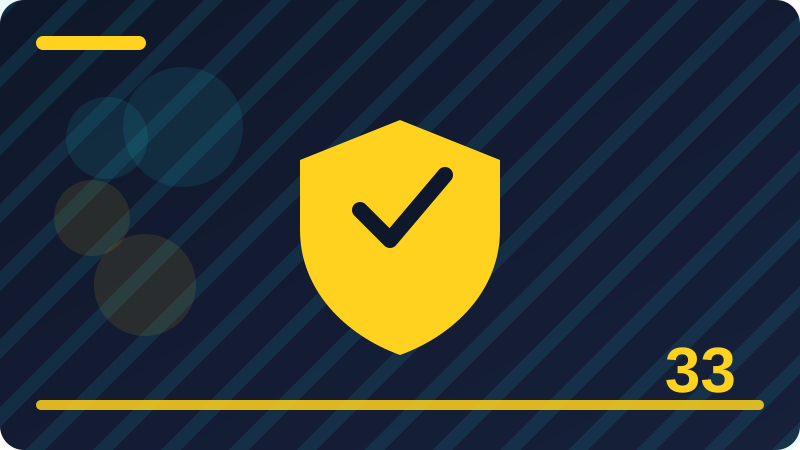

Chapter 33: Vulnerability Management: Find, Fix, Verify

Section 1: What Is a Vulnerability
This section is about what is a vulnerability. It matters because it is one of the everyday habits that separate a careful defender from someone who only reacts after trouble arrives. Take it slowly, in plain words, and connect it to systems and files you own and control. The examples in this section use only your own computer, your own accounts, and your own notes. By the end, you should be able to explain what is a vulnerability to a friend without jargon, and to say what you would check first, what you would do next, and what you would write down.
A vulnerability is a weakness in a system that could be used to cause harm, or that makes harm more likely. It is not yet an attack, and it is not proof that anyone has used it. A missing update, a weak password, an unnecessary service left running, or a setting left at its default can all be vulnerabilities. The defensive job is to find weaknesses in systems you own or are authorised to test, fix them in order of risk, and then verify that the fix worked. That cycle, find, fix, verify, is the whole chapter in three words.
Vulnerabilities happen for ordinary reasons. Software is written by people, people make mistakes, and systems grow more complex over time. A feature added for convenience can open a new weakness. A setting that was safe in one context can become unsafe when the system is connected differently. Old software can become vulnerable when a new weakness is discovered in it, even if nothing about your copy changed. This is why vulnerability management is ongoing work, not a one-time clean-up.
Permission comes before testing, always. You may test systems you own, and systems where you have clear written permission that states what you may test, when, and how findings should be reported. Testing anything else, even with good intentions, can break a system, break the law, and harm trust. A written scope protects everyone: it tells you what is in bounds, what is out of bounds, and who to contact if something goes wrong. If you do not have permission, the defensive work is to study, to practise in your own lab, and to report concerns through proper channels.
Put what is a vulnerability into practice on your own system this week, in a small and safe way. Start with one example you control, write down what you expected to see, and then compare what you actually saw. If the result surprises you, do not rush to a conclusion; check one more source, such as a second log, a settings page, or a trusted help page. A careful note, with the date and the result, turns a single exercise into a habit you can repeat. That habit is the real lesson of this section, more than any single fact, because defenders improve by repeating calm checks, not by memorising warnings. Record the system, the version, and the date before you change anything.
Check: In your own words, what does what is a vulnerability mean, and what is one safe check you would do on your own system?
Section 2: Weaknesses Versus Attacks
This section is about weaknesses versus attacks. It matters because it is one of the everyday habits that separate a careful defender from someone who only reacts after trouble arrives. Take it slowly, in plain words, and connect it to systems and files you own and control. The examples in this section use only your own computer, your own accounts, and your own notes. By the end, you should be able to explain weaknesses versus attacks to a friend without jargon, and to say what you would check first, what you would do next, and what you would write down.
An inventory is the foundation of vulnerability management. You cannot protect what you do not know you have. List the devices, accounts, programs, and services you are responsible for, with their versions where it matters. Keep the list simple enough that you will actually update it. When a new weakness is announced, an inventory lets you answer quickly: do I have this software, which version, and where? Without an inventory, every announcement becomes a long hunt.
Not every vulnerability deserves the same urgency. Ranking by risk means asking how bad the harm could be, how easy the weakness is to use, and whether your system is exposed in that way. A serious weakness in a service open to the internet matters more than the same weakness in a program you never run and never connect. A fix that is quick and safe can also jump the queue. Ranking is judgement, not panic, and writing down your reasons helps you explain your choices later.
Fixing is only half the job; verifying is the other half. A patch can fail to install, a setting can revert after a restart, or a fix can solve one problem while leaving another open. Verification means re-checking the same way you found the problem, on the same system, and confirming the weakness is gone. It also means checking that the system still works for its normal purpose. A fix that breaks the work it was meant to protect is not a complete fix.
Put weaknesses versus attacks into practice on your own system this week, in a small and safe way. Start with one example you control, write down what you expected to see, and then compare what you actually saw. If the result surprises you, do not rush to a conclusion; check one more source, such as a second log, a settings page, or a trusted help page. A careful note, with the date and the result, turns a single exercise into a habit you can repeat. That habit is the real lesson of this section, more than any single fact, because defenders improve by repeating calm checks, not by memorising warnings. Fix the highest-risk item you can fix safely first, then move to the next. After every fix, re-check in the same way you found the problem. If a fix breaks normal work, note it plainly and seek a safer fix.
Check: In your own words, what does weaknesses versus attacks mean, and what is one safe check you would do on your own system?
Section 3: Why Vulnerabilities Happen
This section is about why vulnerabilities happen. It matters because it is one of the everyday habits that separate a careful defender from someone who only reacts after trouble arrives. Take it slowly, in plain words, and connect it to systems and files you own and control. The examples in this section use only your own computer, your own accounts, and your own notes. By the end, you should be able to explain why vulnerabilities happen to a friend without jargon, and to say what you would check first, what you would do next, and what you would write down.
Scan reports need careful reading. A scanner lists possible weaknesses, but it can also be wrong, out of date, or describing a weakness that does not apply to your setup. A false positive is a report of a problem that is not really there, or not really a risk in your case. Do not ignore reports, and do not blindly follow them either. Check the evidence, check the version, check whether the service is actually running, and record your conclusion. That checking is real defensive skill.
Documentation turns one-off fixes into lasting improvement. For each vulnerability, record what it was, where it was found, how serious it was, what you fixed, when you fixed it, and how you verified the fix. For open items, record why they are still open and when you will review them again. This record helps you during the next review, helps others who share responsibility, and shows honest progress. A list that only ever grows, with no fixes recorded, is a warning sign that the process needs attention.
Patching safely means planning for the chance that something goes wrong. Back up before a major change, patch one system or one group at a time when you can, and test the important functions afterwards. Keep a note of what you changed so you can undo it if needed. Rushing to patch everything at once, without a backup and without testing, can turn a security fix into an outage. Speed matters for serious risks, but a careful, reversible fix is faster in the end than repairing a broken system.
Put why vulnerabilities happen into practice on your own system this week, in a small and safe way. Start with one example you control, write down what you expected to see, and then compare what you actually saw. If the result surprises you, do not rush to a conclusion; check one more source, such as a second log, a settings page, or a trusted help page. A careful note, with the date and the result, turns a single exercise into a habit you can repeat. That habit is the real lesson of this section, more than any single fact, because defenders improve by repeating calm checks, not by memorising warnings. After every fix, re-check in the same way you found the problem. If a fix breaks normal work, note it plainly and seek a safer fix.
Check: In your own words, what does why vulnerabilities happen mean, and what is one safe check you would do on your own system?
Section 4: Your Own Systems First
This section is about your own systems first. It matters because it is one of the everyday habits that separate a careful defender from someone who only reacts after trouble arrives. Take it slowly, in plain words, and connect it to systems and files you own and control. The examples in this section use only your own computer, your own accounts, and your own notes. By the end, you should be able to explain your own systems first to a friend without jargon, and to say what you would check first, what you would do next, and what you would write down.
Vulnerability management is a habit, not a project with a finish line. New weaknesses are discovered, new software is installed, and old settings drift. A monthly check of updates, inventory, and open items, and a deeper quarterly review, keeps the habit alive without taking over your life. The goal is not a perfect system with no weaknesses ever; the goal is a system where weaknesses are known, ranked, fixed in order, and verified, again and again.
A vulnerability is a weakness in a system that could be used to cause harm, or that makes harm more likely. It is not yet an attack, and it is not proof that anyone has used it. A missing update, a weak password, an unnecessary service left running, or a setting left at its default can all be vulnerabilities. The defensive job is to find weaknesses in systems you own or are authorised to test, fix them in order of risk, and then verify that the fix worked. That cycle, find, fix, verify, is the whole chapter in three words.
Vulnerabilities happen for ordinary reasons. Software is written by people, people make mistakes, and systems grow more complex over time. A feature added for convenience can open a new weakness. A setting that was safe in one context can become unsafe when the system is connected differently. Old software can become vulnerable when a new weakness is discovered in it, even if nothing about your copy changed. This is why vulnerability management is ongoing work, not a one-time clean-up.
Put your own systems first into practice on your own system this week, in a small and safe way. Start with one example you control, write down what you expected to see, and then compare what you actually saw. If the result surprises you, do not rush to a conclusion; check one more source, such as a second log, a settings page, or a trusted help page. A careful note, with the date and the result, turns a single exercise into a habit you can repeat. That habit is the real lesson of this section, more than any single fact, because defenders improve by repeating calm checks, not by memorising warnings. If a fix breaks normal work, note it plainly and seek a safer fix. Keep open items on a dated list, with a review date for each one.
inventory = [{'name': 'laptop', 'version': '1.2'}, {'name': 'editor', 'version': '2.0'}]
for item in inventory:
print(item['name'], 'version', item['version'])Check: In your own words, what does your own systems first mean, and what is one safe check you would do on your own system?
Section 5: Permission Before Any Testing
This section is about permission before any testing. It matters because it is one of the everyday habits that separate a careful defender from someone who only reacts after trouble arrives. Take it slowly, in plain words, and connect it to systems and files you own and control. The examples in this section use only your own computer, your own accounts, and your own notes. By the end, you should be able to explain permission before any testing to a friend without jargon, and to say what you would check first, what you would do next, and what you would write down.
Permission comes before testing, always. You may test systems you own, and systems where you have clear written permission that states what you may test, when, and how findings should be reported. Testing anything else, even with good intentions, can break a system, break the law, and harm trust. A written scope protects everyone: it tells you what is in bounds, what is out of bounds, and who to contact if something goes wrong. If you do not have permission, the defensive work is to study, to practise in your own lab, and to report concerns through proper channels.
An inventory is the foundation of vulnerability management. You cannot protect what you do not know you have. List the devices, accounts, programs, and services you are responsible for, with their versions where it matters. Keep the list simple enough that you will actually update it. When a new weakness is announced, an inventory lets you answer quickly: do I have this software, which version, and where? Without an inventory, every announcement becomes a long hunt.
Not every vulnerability deserves the same urgency. Ranking by risk means asking how bad the harm could be, how easy the weakness is to use, and whether your system is exposed in that way. A serious weakness in a service open to the internet matters more than the same weakness in a program you never run and never connect. A fix that is quick and safe can also jump the queue. Ranking is judgement, not panic, and writing down your reasons helps you explain your choices later.
Put permission before any testing into practice on your own system this week, in a small and safe way. Start with one example you control, write down what you expected to see, and then compare what you actually saw. If the result surprises you, do not rush to a conclusion; check one more source, such as a second log, a settings page, or a trusted help page. A careful note, with the date and the result, turns a single exercise into a habit you can repeat. That habit is the real lesson of this section, more than any single fact, because defenders improve by repeating calm checks, not by memorising warnings. Keep open items on a dated list, with a review date for each one. Never test a system you do not own or have written permission to test.
Check: In your own words, what does permission before any testing mean, and what is one safe check you would do on your own system?
Section 6: Scope: What Is In and What Is Out
This section is about scope: what is in and what is out. It matters because it is one of the everyday habits that separate a careful defender from someone who only reacts after trouble arrives. Take it slowly, in plain words, and connect it to systems and files you own and control. The examples in this section use only your own computer, your own accounts, and your own notes. By the end, you should be able to explain scope: what is in and what is out to a friend without jargon, and to say what you would check first, what you would do next, and what you would write down.
Fixing is only half the job; verifying is the other half. A patch can fail to install, a setting can revert after a restart, or a fix can solve one problem while leaving another open. Verification means re-checking the same way you found the problem, on the same system, and confirming the weakness is gone. It also means checking that the system still works for its normal purpose. A fix that breaks the work it was meant to protect is not a complete fix.
Scan reports need careful reading. A scanner lists possible weaknesses, but it can also be wrong, out of date, or describing a weakness that does not apply to your setup. A false positive is a report of a problem that is not really there, or not really a risk in your case. Do not ignore reports, and do not blindly follow them either. Check the evidence, check the version, check whether the service is actually running, and record your conclusion. That checking is real defensive skill.
Documentation turns one-off fixes into lasting improvement. For each vulnerability, record what it was, where it was found, how serious it was, what you fixed, when you fixed it, and how you verified the fix. For open items, record why they are still open and when you will review them again. This record helps you during the next review, helps others who share responsibility, and shows honest progress. A list that only ever grows, with no fixes recorded, is a warning sign that the process needs attention.
Put scope: what is in and what is out into practice on your own system this week, in a small and safe way. Start with one example you control, write down what you expected to see, and then compare what you actually saw. If the result surprises you, do not rush to a conclusion; check one more source, such as a second log, a settings page, or a trusted help page. A careful note, with the date and the result, turns a single exercise into a habit you can repeat. That habit is the real lesson of this section, more than any single fact, because defenders improve by repeating calm checks, not by memorising warnings. Never test a system you do not own or have written permission to test.
Check: In your own words, what does scope: what is in and what is out mean, and what is one safe check you would do on your own system?
Section 7: Making an Inventory of Your Systems
This section is about making an inventory of your systems. It matters because it is one of the everyday habits that separate a careful defender from someone who only reacts after trouble arrives. Take it slowly, in plain words, and connect it to systems and files you own and control. The examples in this section use only your own computer, your own accounts, and your own notes. By the end, you should be able to explain making an inventory of your systems to a friend without jargon, and to say what you would check first, what you would do next, and what you would write down.
Patching safely means planning for the chance that something goes wrong. Back up before a major change, patch one system or one group at a time when you can, and test the important functions afterwards. Keep a note of what you changed so you can undo it if needed. Rushing to patch everything at once, without a backup and without testing, can turn a security fix into an outage. Speed matters for serious risks, but a careful, reversible fix is faster in the end than repairing a broken system.
Vulnerability management is a habit, not a project with a finish line. New weaknesses are discovered, new software is installed, and old settings drift. A monthly check of updates, inventory, and open items, and a deeper quarterly review, keeps the habit alive without taking over your life. The goal is not a perfect system with no weaknesses ever; the goal is a system where weaknesses are known, ranked, fixed in order, and verified, again and again.
A vulnerability is a weakness in a system that could be used to cause harm, or that makes harm more likely. It is not yet an attack, and it is not proof that anyone has used it. A missing update, a weak password, an unnecessary service left running, or a setting left at its default can all be vulnerabilities. The defensive job is to find weaknesses in systems you own or are authorised to test, fix them in order of risk, and then verify that the fix worked. That cycle, find, fix, verify, is the whole chapter in three words.
Put making an inventory of your systems into practice on your own system this week, in a small and safe way. Start with one example you control, write down what you expected to see, and then compare what you actually saw. If the result surprises you, do not rush to a conclusion; check one more source, such as a second log, a settings page, or a trusted help page. A careful note, with the date and the result, turns a single exercise into a habit you can repeat. That habit is the real lesson of this section, more than any single fact, because defenders improve by repeating calm checks, not by memorising warnings. Record the system, the version, and the date before you change anything.
Check: In your own words, what does making an inventory of your systems mean, and what is one safe check you would do on your own system?
Section 8: Keeping an Inventory Up to Date
This section is about keeping an inventory up to date. It matters because it is one of the everyday habits that separate a careful defender from someone who only reacts after trouble arrives. Take it slowly, in plain words, and connect it to systems and files you own and control. The examples in this section use only your own computer, your own accounts, and your own notes. By the end, you should be able to explain keeping an inventory up to date to a friend without jargon, and to say what you would check first, what you would do next, and what you would write down.
Vulnerabilities happen for ordinary reasons. Software is written by people, people make mistakes, and systems grow more complex over time. A feature added for convenience can open a new weakness. A setting that was safe in one context can become unsafe when the system is connected differently. Old software can become vulnerable when a new weakness is discovered in it, even if nothing about your copy changed. This is why vulnerability management is ongoing work, not a one-time clean-up.
Permission comes before testing, always. You may test systems you own, and systems where you have clear written permission that states what you may test, when, and how findings should be reported. Testing anything else, even with good intentions, can break a system, break the law, and harm trust. A written scope protects everyone: it tells you what is in bounds, what is out of bounds, and who to contact if something goes wrong. If you do not have permission, the defensive work is to study, to practise in your own lab, and to report concerns through proper channels.
An inventory is the foundation of vulnerability management. You cannot protect what you do not know you have. List the devices, accounts, programs, and services you are responsible for, with their versions where it matters. Keep the list simple enough that you will actually update it. When a new weakness is announced, an inventory lets you answer quickly: do I have this software, which version, and where? Without an inventory, every announcement becomes a long hunt.
Put keeping an inventory up to date into practice on your own system this week, in a small and safe way. Start with one example you control, write down what you expected to see, and then compare what you actually saw. If the result surprises you, do not rush to a conclusion; check one more source, such as a second log, a settings page, or a trusted help page. A careful note, with the date and the result, turns a single exercise into a habit you can repeat. That habit is the real lesson of this section, more than any single fact, because defenders improve by repeating calm checks, not by memorising warnings. Fix the highest-risk item you can fix safely first, then move to the next. After every fix, re-check in the same way you found the problem.
open_items = [{'issue': 'old version', 'risk': 'high'}, {'issue': 'unused service', 'risk': 'low'}]
for item in sorted(open_items, key=lambda x: x['risk']):
print(item)Check: In your own words, what does keeping an inventory up to date mean, and what is one safe check you would do on your own system?
Section 9: Finding Vulnerabilities Safely
This section is about finding vulnerabilities safely. It matters because it is one of the everyday habits that separate a careful defender from someone who only reacts after trouble arrives. Take it slowly, in plain words, and connect it to systems and files you own and control. The examples in this section use only your own computer, your own accounts, and your own notes. By the end, you should be able to explain finding vulnerabilities safely to a friend without jargon, and to say what you would check first, what you would do next, and what you would write down.
Not every vulnerability deserves the same urgency. Ranking by risk means asking how bad the harm could be, how easy the weakness is to use, and whether your system is exposed in that way. A serious weakness in a service open to the internet matters more than the same weakness in a program you never run and never connect. A fix that is quick and safe can also jump the queue. Ranking is judgement, not panic, and writing down your reasons helps you explain your choices later.
Fixing is only half the job; verifying is the other half. A patch can fail to install, a setting can revert after a restart, or a fix can solve one problem while leaving another open. Verification means re-checking the same way you found the problem, on the same system, and confirming the weakness is gone. It also means checking that the system still works for its normal purpose. A fix that breaks the work it was meant to protect is not a complete fix.
Scan reports need careful reading. A scanner lists possible weaknesses, but it can also be wrong, out of date, or describing a weakness that does not apply to your setup. A false positive is a report of a problem that is not really there, or not really a risk in your case. Do not ignore reports, and do not blindly follow them either. Check the evidence, check the version, check whether the service is actually running, and record your conclusion. That checking is real defensive skill.
Put finding vulnerabilities safely into practice on your own system this week, in a small and safe way. Start with one example you control, write down what you expected to see, and then compare what you actually saw. If the result surprises you, do not rush to a conclusion; check one more source, such as a second log, a settings page, or a trusted help page. A careful note, with the date and the result, turns a single exercise into a habit you can repeat. That habit is the real lesson of this section, more than any single fact, because defenders improve by repeating calm checks, not by memorising warnings. After every fix, re-check in the same way you found the problem. If a fix breaks normal work, note it plainly and seek a safer fix.
Check: In your own words, what does finding vulnerabilities safely mean, and what is one safe check you would do on your own system?
Section 10: Reading Update and Patch Notes
This section is about reading update and patch notes. It matters because it is one of the everyday habits that separate a careful defender from someone who only reacts after trouble arrives. Take it slowly, in plain words, and connect it to systems and files you own and control. The examples in this section use only your own computer, your own accounts, and your own notes. By the end, you should be able to explain reading update and patch notes to a friend without jargon, and to say what you would check first, what you would do next, and what you would write down.
Documentation turns one-off fixes into lasting improvement. For each vulnerability, record what it was, where it was found, how serious it was, what you fixed, when you fixed it, and how you verified the fix. For open items, record why they are still open and when you will review them again. This record helps you during the next review, helps others who share responsibility, and shows honest progress. A list that only ever grows, with no fixes recorded, is a warning sign that the process needs attention.
Patching safely means planning for the chance that something goes wrong. Back up before a major change, patch one system or one group at a time when you can, and test the important functions afterwards. Keep a note of what you changed so you can undo it if needed. Rushing to patch everything at once, without a backup and without testing, can turn a security fix into an outage. Speed matters for serious risks, but a careful, reversible fix is faster in the end than repairing a broken system.
Vulnerability management is a habit, not a project with a finish line. New weaknesses are discovered, new software is installed, and old settings drift. A monthly check of updates, inventory, and open items, and a deeper quarterly review, keeps the habit alive without taking over your life. The goal is not a perfect system with no weaknesses ever; the goal is a system where weaknesses are known, ranked, fixed in order, and verified, again and again.
Put reading update and patch notes into practice on your own system this week, in a small and safe way. Start with one example you control, write down what you expected to see, and then compare what you actually saw. If the result surprises you, do not rush to a conclusion; check one more source, such as a second log, a settings page, or a trusted help page. A careful note, with the date and the result, turns a single exercise into a habit you can repeat. That habit is the real lesson of this section, more than any single fact, because defenders improve by repeating calm checks, not by memorising warnings. If a fix breaks normal work, note it plainly and seek a safer fix. Keep open items on a dated list, with a review date for each one.
Check: In your own words, what does reading update and patch notes mean, and what is one safe check you would do on your own system?
Section 11: Checking Versions on Your Own Systems
This section is about checking versions on your own systems. It matters because it is one of the everyday habits that separate a careful defender from someone who only reacts after trouble arrives. Take it slowly, in plain words, and connect it to systems and files you own and control. The examples in this section use only your own computer, your own accounts, and your own notes. By the end, you should be able to explain checking versions on your own systems to a friend without jargon, and to say what you would check first, what you would do next, and what you would write down.
A vulnerability is a weakness in a system that could be used to cause harm, or that makes harm more likely. It is not yet an attack, and it is not proof that anyone has used it. A missing update, a weak password, an unnecessary service left running, or a setting left at its default can all be vulnerabilities. The defensive job is to find weaknesses in systems you own or are authorised to test, fix them in order of risk, and then verify that the fix worked. That cycle, find, fix, verify, is the whole chapter in three words.
Vulnerabilities happen for ordinary reasons. Software is written by people, people make mistakes, and systems grow more complex over time. A feature added for convenience can open a new weakness. A setting that was safe in one context can become unsafe when the system is connected differently. Old software can become vulnerable when a new weakness is discovered in it, even if nothing about your copy changed. This is why vulnerability management is ongoing work, not a one-time clean-up.
Permission comes before testing, always. You may test systems you own, and systems where you have clear written permission that states what you may test, when, and how findings should be reported. Testing anything else, even with good intentions, can break a system, break the law, and harm trust. A written scope protects everyone: it tells you what is in bounds, what is out of bounds, and who to contact if something goes wrong. If you do not have permission, the defensive work is to study, to practise in your own lab, and to report concerns through proper channels.
Put checking versions on your own systems into practice on your own system this week, in a small and safe way. Start with one example you control, write down what you expected to see, and then compare what you actually saw. If the result surprises you, do not rush to a conclusion; check one more source, such as a second log, a settings page, or a trusted help page. A careful note, with the date and the result, turns a single exercise into a habit you can repeat. That habit is the real lesson of this section, more than any single fact, because defenders improve by repeating calm checks, not by memorising warnings.
Check: In your own words, what does checking versions on your own systems mean, and what is one safe check you would do on your own system?
Section 12: Outdated Software and Risk
This section is about outdated software and risk. It matters because it is one of the everyday habits that separate a careful defender from someone who only reacts after trouble arrives. Take it slowly, in plain words, and connect it to systems and files you own and control. The examples in this section use only your own computer, your own accounts, and your own notes. By the end, you should be able to explain outdated software and risk to a friend without jargon, and to say what you would check first, what you would do next, and what you would write down.
An inventory is the foundation of vulnerability management. You cannot protect what you do not know you have. List the devices, accounts, programs, and services you are responsible for, with their versions where it matters. Keep the list simple enough that you will actually update it. When a new weakness is announced, an inventory lets you answer quickly: do I have this software, which version, and where? Without an inventory, every announcement becomes a long hunt.
Not every vulnerability deserves the same urgency. Ranking by risk means asking how bad the harm could be, how easy the weakness is to use, and whether your system is exposed in that way. A serious weakness in a service open to the internet matters more than the same weakness in a program you never run and never connect. A fix that is quick and safe can also jump the queue. Ranking is judgement, not panic, and writing down your reasons helps you explain your choices later.
Fixing is only half the job; verifying is the other half. A patch can fail to install, a setting can revert after a restart, or a fix can solve one problem while leaving another open. Verification means re-checking the same way you found the problem, on the same system, and confirming the weakness is gone. It also means checking that the system still works for its normal purpose. A fix that breaks the work it was meant to protect is not a complete fix.
Put outdated software and risk into practice on your own system this week, in a small and safe way. Start with one example you control, write down what you expected to see, and then compare what you actually saw. If the result surprises you, do not rush to a conclusion; check one more source, such as a second log, a settings page, or a trusted help page. A careful note, with the date and the result, turns a single exercise into a habit you can repeat. That habit is the real lesson of this section, more than any single fact, because defenders improve by repeating calm checks, not by memorising warnings. Never test a system you do not own or have written permission to test. Record the system, the version, and the date before you change anything. Fix the highest-risk item you can fix safely first, then move to the next.
checks = {'patched': True, 'tested': True}
print('Fix verified:', all(checks.values()))Check: In your own words, what does outdated software and risk mean, and what is one safe check you would do on your own system?
Section 13: Default Settings That Weaken Security
This section is about default settings that weaken security. It matters because it is one of the everyday habits that separate a careful defender from someone who only reacts after trouble arrives. Take it slowly, in plain words, and connect it to systems and files you own and control. The examples in this section use only your own computer, your own accounts, and your own notes. By the end, you should be able to explain default settings that weaken security to a friend without jargon, and to say what you would check first, what you would do next, and what you would write down.
Scan reports need careful reading. A scanner lists possible weaknesses, but it can also be wrong, out of date, or describing a weakness that does not apply to your setup. A false positive is a report of a problem that is not really there, or not really a risk in your case. Do not ignore reports, and do not blindly follow them either. Check the evidence, check the version, check whether the service is actually running, and record your conclusion. That checking is real defensive skill.
Documentation turns one-off fixes into lasting improvement. For each vulnerability, record what it was, where it was found, how serious it was, what you fixed, when you fixed it, and how you verified the fix. For open items, record why they are still open and when you will review them again. This record helps you during the next review, helps others who share responsibility, and shows honest progress. A list that only ever grows, with no fixes recorded, is a warning sign that the process needs attention.
Patching safely means planning for the chance that something goes wrong. Back up before a major change, patch one system or one group at a time when you can, and test the important functions afterwards. Keep a note of what you changed so you can undo it if needed. Rushing to patch everything at once, without a backup and without testing, can turn a security fix into an outage. Speed matters for serious risks, but a careful, reversible fix is faster in the end than repairing a broken system.
Put default settings that weaken security into practice on your own system this week, in a small and safe way. Start with one example you control, write down what you expected to see, and then compare what you actually saw. If the result surprises you, do not rush to a conclusion; check one more source, such as a second log, a settings page, or a trusted help page. A careful note, with the date and the result, turns a single exercise into a habit you can repeat. That habit is the real lesson of this section, more than any single fact, because defenders improve by repeating calm checks, not by memorising warnings. Record the system, the version, and the date before you change anything. Fix the highest-risk item you can fix safely first, then move to the next.
Check: In your own words, what does default settings that weaken security mean, and what is one safe check you would do on your own system?
Section 14: Open Ports in Plain Words
This section is about open ports in plain words. It matters because it is one of the everyday habits that separate a careful defender from someone who only reacts after trouble arrives. Take it slowly, in plain words, and connect it to systems and files you own and control. The examples in this section use only your own computer, your own accounts, and your own notes. By the end, you should be able to explain open ports in plain words to a friend without jargon, and to say what you would check first, what you would do next, and what you would write down.
Vulnerability management is a habit, not a project with a finish line. New weaknesses are discovered, new software is installed, and old settings drift. A monthly check of updates, inventory, and open items, and a deeper quarterly review, keeps the habit alive without taking over your life. The goal is not a perfect system with no weaknesses ever; the goal is a system where weaknesses are known, ranked, fixed in order, and verified, again and again.
A vulnerability is a weakness in a system that could be used to cause harm, or that makes harm more likely. It is not yet an attack, and it is not proof that anyone has used it. A missing update, a weak password, an unnecessary service left running, or a setting left at its default can all be vulnerabilities. The defensive job is to find weaknesses in systems you own or are authorised to test, fix them in order of risk, and then verify that the fix worked. That cycle, find, fix, verify, is the whole chapter in three words.
Vulnerabilities happen for ordinary reasons. Software is written by people, people make mistakes, and systems grow more complex over time. A feature added for convenience can open a new weakness. A setting that was safe in one context can become unsafe when the system is connected differently. Old software can become vulnerable when a new weakness is discovered in it, even if nothing about your copy changed. This is why vulnerability management is ongoing work, not a one-time clean-up.
Put open ports in plain words into practice on your own system this week, in a small and safe way. Start with one example you control, write down what you expected to see, and then compare what you actually saw. If the result surprises you, do not rush to a conclusion; check one more source, such as a second log, a settings page, or a trusted help page. A careful note, with the date and the result, turns a single exercise into a habit you can repeat. That habit is the real lesson of this section, more than any single fact, because defenders improve by repeating calm checks, not by memorising warnings. Fix the highest-risk item you can fix safely first, then move to the next. After every fix, re-check in the same way you found the problem.
Check: In your own words, what does open ports in plain words mean, and what is one safe check you would do on your own system?
Section 15: Services You Do Not Need
This section is about services you do not need. It matters because it is one of the everyday habits that separate a careful defender from someone who only reacts after trouble arrives. Take it slowly, in plain words, and connect it to systems and files you own and control. The examples in this section use only your own computer, your own accounts, and your own notes. By the end, you should be able to explain services you do not need to a friend without jargon, and to say what you would check first, what you would do next, and what you would write down.
Permission comes before testing, always. You may test systems you own, and systems where you have clear written permission that states what you may test, when, and how findings should be reported. Testing anything else, even with good intentions, can break a system, break the law, and harm trust. A written scope protects everyone: it tells you what is in bounds, what is out of bounds, and who to contact if something goes wrong. If you do not have permission, the defensive work is to study, to practise in your own lab, and to report concerns through proper channels.
An inventory is the foundation of vulnerability management. You cannot protect what you do not know you have. List the devices, accounts, programs, and services you are responsible for, with their versions where it matters. Keep the list simple enough that you will actually update it. When a new weakness is announced, an inventory lets you answer quickly: do I have this software, which version, and where? Without an inventory, every announcement becomes a long hunt.
Not every vulnerability deserves the same urgency. Ranking by risk means asking how bad the harm could be, how easy the weakness is to use, and whether your system is exposed in that way. A serious weakness in a service open to the internet matters more than the same weakness in a program you never run and never connect. A fix that is quick and safe can also jump the queue. Ranking is judgement, not panic, and writing down your reasons helps you explain your choices later.
Put services you do not need into practice on your own system this week, in a small and safe way. Start with one example you control, write down what you expected to see, and then compare what you actually saw. If the result surprises you, do not rush to a conclusion; check one more source, such as a second log, a settings page, or a trusted help page. A careful note, with the date and the result, turns a single exercise into a habit you can repeat. That habit is the real lesson of this section, more than any single fact, because defenders improve by repeating calm checks, not by memorising warnings. After every fix, re-check in the same way you found the problem. If a fix breaks normal work, note it plainly and seek a safer fix.
Check: In your own words, what does services you do not need mean, and what is one safe check you would do on your own system?
Section 16: Weak Passwords as Vulnerabilities
This section is about weak passwords as vulnerabilities. It matters because it is one of the everyday habits that separate a careful defender from someone who only reacts after trouble arrives. Take it slowly, in plain words, and connect it to systems and files you own and control. The examples in this section use only your own computer, your own accounts, and your own notes. By the end, you should be able to explain weak passwords as vulnerabilities to a friend without jargon, and to say what you would check first, what you would do next, and what you would write down.
Fixing is only half the job; verifying is the other half. A patch can fail to install, a setting can revert after a restart, or a fix can solve one problem while leaving another open. Verification means re-checking the same way you found the problem, on the same system, and confirming the weakness is gone. It also means checking that the system still works for its normal purpose. A fix that breaks the work it was meant to protect is not a complete fix.
Scan reports need careful reading. A scanner lists possible weaknesses, but it can also be wrong, out of date, or describing a weakness that does not apply to your setup. A false positive is a report of a problem that is not really there, or not really a risk in your case. Do not ignore reports, and do not blindly follow them either. Check the evidence, check the version, check whether the service is actually running, and record your conclusion. That checking is real defensive skill.
Documentation turns one-off fixes into lasting improvement. For each vulnerability, record what it was, where it was found, how serious it was, what you fixed, when you fixed it, and how you verified the fix. For open items, record why they are still open and when you will review them again. This record helps you during the next review, helps others who share responsibility, and shows honest progress. A list that only ever grows, with no fixes recorded, is a warning sign that the process needs attention.
Put weak passwords as vulnerabilities into practice on your own system this week, in a small and safe way. Start with one example you control, write down what you expected to see, and then compare what you actually saw. If the result surprises you, do not rush to a conclusion; check one more source, such as a second log, a settings page, or a trusted help page. A careful note, with the date and the result, turns a single exercise into a habit you can repeat. That habit is the real lesson of this section, more than any single fact, because defenders improve by repeating calm checks, not by memorising warnings. If a fix breaks normal work, note it plainly and seek a safer fix. Keep open items on a dated list, with a review date for each one.
inventory = [{'name': 'laptop', 'version': '1.2'}, {'name': 'editor', 'version': '2.0'}]
for item in inventory:
print(item['name'], 'version', item['version'])Check: In your own words, what does weak passwords as vulnerabilities mean, and what is one safe check you would do on your own system?
Section 17: Missing Updates as Vulnerabilities
This section is about missing updates as vulnerabilities. It matters because it is one of the everyday habits that separate a careful defender from someone who only reacts after trouble arrives. Take it slowly, in plain words, and connect it to systems and files you own and control. The examples in this section use only your own computer, your own accounts, and your own notes. By the end, you should be able to explain missing updates as vulnerabilities to a friend without jargon, and to say what you would check first, what you would do next, and what you would write down.
Patching safely means planning for the chance that something goes wrong. Back up before a major change, patch one system or one group at a time when you can, and test the important functions afterwards. Keep a note of what you changed so you can undo it if needed. Rushing to patch everything at once, without a backup and without testing, can turn a security fix into an outage. Speed matters for serious risks, but a careful, reversible fix is faster in the end than repairing a broken system.
Vulnerability management is a habit, not a project with a finish line. New weaknesses are discovered, new software is installed, and old settings drift. A monthly check of updates, inventory, and open items, and a deeper quarterly review, keeps the habit alive without taking over your life. The goal is not a perfect system with no weaknesses ever; the goal is a system where weaknesses are known, ranked, fixed in order, and verified, again and again.
A vulnerability is a weakness in a system that could be used to cause harm, or that makes harm more likely. It is not yet an attack, and it is not proof that anyone has used it. A missing update, a weak password, an unnecessary service left running, or a setting left at its default can all be vulnerabilities. The defensive job is to find weaknesses in systems you own or are authorised to test, fix them in order of risk, and then verify that the fix worked. That cycle, find, fix, verify, is the whole chapter in three words.
Put missing updates as vulnerabilities into practice on your own system this week, in a small and safe way. Start with one example you control, write down what you expected to see, and then compare what you actually saw. If the result surprises you, do not rush to a conclusion; check one more source, such as a second log, a settings page, or a trusted help page. A careful note, with the date and the result, turns a single exercise into a habit you can repeat. That habit is the real lesson of this section, more than any single fact, because defenders improve by repeating calm checks, not by memorising warnings. Keep open items on a dated list, with a review date for each one.
Check: In your own words, what does missing updates as vulnerabilities mean, and what is one safe check you would do on your own system?
Section 18: Misconfiguration in Plain Words
This section is about misconfiguration in plain words. It matters because it is one of the everyday habits that separate a careful defender from someone who only reacts after trouble arrives. Take it slowly, in plain words, and connect it to systems and files you own and control. The examples in this section use only your own computer, your own accounts, and your own notes. By the end, you should be able to explain misconfiguration in plain words to a friend without jargon, and to say what you would check first, what you would do next, and what you would write down.
Vulnerabilities happen for ordinary reasons. Software is written by people, people make mistakes, and systems grow more complex over time. A feature added for convenience can open a new weakness. A setting that was safe in one context can become unsafe when the system is connected differently. Old software can become vulnerable when a new weakness is discovered in it, even if nothing about your copy changed. This is why vulnerability management is ongoing work, not a one-time clean-up.
Permission comes before testing, always. You may test systems you own, and systems where you have clear written permission that states what you may test, when, and how findings should be reported. Testing anything else, even with good intentions, can break a system, break the law, and harm trust. A written scope protects everyone: it tells you what is in bounds, what is out of bounds, and who to contact if something goes wrong. If you do not have permission, the defensive work is to study, to practise in your own lab, and to report concerns through proper channels.
An inventory is the foundation of vulnerability management. You cannot protect what you do not know you have. List the devices, accounts, programs, and services you are responsible for, with their versions where it matters. Keep the list simple enough that you will actually update it. When a new weakness is announced, an inventory lets you answer quickly: do I have this software, which version, and where? Without an inventory, every announcement becomes a long hunt.
Put misconfiguration in plain words into practice on your own system this week, in a small and safe way. Start with one example you control, write down what you expected to see, and then compare what you actually saw. If the result surprises you, do not rush to a conclusion; check one more source, such as a second log, a settings page, or a trusted help page. A careful note, with the date and the result, turns a single exercise into a habit you can repeat. That habit is the real lesson of this section, more than any single fact, because defenders improve by repeating calm checks, not by memorising warnings. Never test a system you do not own or have written permission to test. Record the system, the version, and the date before you change anything.
Check: In your own words, what does misconfiguration in plain words mean, and what is one safe check you would do on your own system?
Section 19: Ranking by Risk, Not by Fear
This section is about ranking by risk, not by fear. It matters because it is one of the everyday habits that separate a careful defender from someone who only reacts after trouble arrives. Take it slowly, in plain words, and connect it to systems and files you own and control. The examples in this section use only your own computer, your own accounts, and your own notes. By the end, you should be able to explain ranking by risk, not by fear to a friend without jargon, and to say what you would check first, what you would do next, and what you would write down.
Not every vulnerability deserves the same urgency. Ranking by risk means asking how bad the harm could be, how easy the weakness is to use, and whether your system is exposed in that way. A serious weakness in a service open to the internet matters more than the same weakness in a program you never run and never connect. A fix that is quick and safe can also jump the queue. Ranking is judgement, not panic, and writing down your reasons helps you explain your choices later.
Fixing is only half the job; verifying is the other half. A patch can fail to install, a setting can revert after a restart, or a fix can solve one problem while leaving another open. Verification means re-checking the same way you found the problem, on the same system, and confirming the weakness is gone. It also means checking that the system still works for its normal purpose. A fix that breaks the work it was meant to protect is not a complete fix.
Scan reports need careful reading. A scanner lists possible weaknesses, but it can also be wrong, out of date, or describing a weakness that does not apply to your setup. A false positive is a report of a problem that is not really there, or not really a risk in your case. Do not ignore reports, and do not blindly follow them either. Check the evidence, check the version, check whether the service is actually running, and record your conclusion. That checking is real defensive skill.
Put ranking by risk, not by fear into practice on your own system this week, in a small and safe way. Start with one example you control, write down what you expected to see, and then compare what you actually saw. If the result surprises you, do not rush to a conclusion; check one more source, such as a second log, a settings page, or a trusted help page. A careful note, with the date and the result, turns a single exercise into a habit you can repeat. That habit is the real lesson of this section, more than any single fact, because defenders improve by repeating calm checks, not by memorising warnings. Record the system, the version, and the date before you change anything. Fix the highest-risk item you can fix safely first, then move to the next.
Check: In your own words, what does ranking by risk, not by fear mean, and what is one safe check you would do on your own system?
Section 20: Severity in Plain Words
This section is about severity in plain words. It matters because it is one of the everyday habits that separate a careful defender from someone who only reacts after trouble arrives. Take it slowly, in plain words, and connect it to systems and files you own and control. The examples in this section use only your own computer, your own accounts, and your own notes. By the end, you should be able to explain severity in plain words to a friend without jargon, and to say what you would check first, what you would do next, and what you would write down.
Documentation turns one-off fixes into lasting improvement. For each vulnerability, record what it was, where it was found, how serious it was, what you fixed, when you fixed it, and how you verified the fix. For open items, record why they are still open and when you will review them again. This record helps you during the next review, helps others who share responsibility, and shows honest progress. A list that only ever grows, with no fixes recorded, is a warning sign that the process needs attention.
Patching safely means planning for the chance that something goes wrong. Back up before a major change, patch one system or one group at a time when you can, and test the important functions afterwards. Keep a note of what you changed so you can undo it if needed. Rushing to patch everything at once, without a backup and without testing, can turn a security fix into an outage. Speed matters for serious risks, but a careful, reversible fix is faster in the end than repairing a broken system.
Vulnerability management is a habit, not a project with a finish line. New weaknesses are discovered, new software is installed, and old settings drift. A monthly check of updates, inventory, and open items, and a deeper quarterly review, keeps the habit alive without taking over your life. The goal is not a perfect system with no weaknesses ever; the goal is a system where weaknesses are known, ranked, fixed in order, and verified, again and again.
Put severity in plain words into practice on your own system this week, in a small and safe way. Start with one example you control, write down what you expected to see, and then compare what you actually saw. If the result surprises you, do not rush to a conclusion; check one more source, such as a second log, a settings page, or a trusted help page. A careful note, with the date and the result, turns a single exercise into a habit you can repeat. That habit is the real lesson of this section, more than any single fact, because defenders improve by repeating calm checks, not by memorising warnings. Fix the highest-risk item you can fix safely first, then move to the next. After every fix, re-check in the same way you found the problem. If a fix breaks normal work, note it plainly and seek a safer fix.
open_items = [{'issue': 'old version', 'risk': 'high'}, {'issue': 'unused service', 'risk': 'low'}]
for item in sorted(open_items, key=lambda x: x['risk']):
print(item)Check: In your own words, what does severity in plain words mean, and what is one safe check you would do on your own system?
Section 21: What to Fix First
This section is about what to fix first. It matters because it is one of the everyday habits that separate a careful defender from someone who only reacts after trouble arrives. Take it slowly, in plain words, and connect it to systems and files you own and control. The examples in this section use only your own computer, your own accounts, and your own notes. By the end, you should be able to explain what to fix first to a friend without jargon, and to say what you would check first, what you would do next, and what you would write down.
A vulnerability is a weakness in a system that could be used to cause harm, or that makes harm more likely. It is not yet an attack, and it is not proof that anyone has used it. A missing update, a weak password, an unnecessary service left running, or a setting left at its default can all be vulnerabilities. The defensive job is to find weaknesses in systems you own or are authorised to test, fix them in order of risk, and then verify that the fix worked. That cycle, find, fix, verify, is the whole chapter in three words.
Vulnerabilities happen for ordinary reasons. Software is written by people, people make mistakes, and systems grow more complex over time. A feature added for convenience can open a new weakness. A setting that was safe in one context can become unsafe when the system is connected differently. Old software can become vulnerable when a new weakness is discovered in it, even if nothing about your copy changed. This is why vulnerability management is ongoing work, not a one-time clean-up.
Permission comes before testing, always. You may test systems you own, and systems where you have clear written permission that states what you may test, when, and how findings should be reported. Testing anything else, even with good intentions, can break a system, break the law, and harm trust. A written scope protects everyone: it tells you what is in bounds, what is out of bounds, and who to contact if something goes wrong. If you do not have permission, the defensive work is to study, to practise in your own lab, and to report concerns through proper channels.
Put what to fix first into practice on your own system this week, in a small and safe way. Start with one example you control, write down what you expected to see, and then compare what you actually saw. If the result surprises you, do not rush to a conclusion; check one more source, such as a second log, a settings page, or a trusted help page. A careful note, with the date and the result, turns a single exercise into a habit you can repeat. That habit is the real lesson of this section, more than any single fact, because defenders improve by repeating calm checks, not by memorising warnings. After every fix, re-check in the same way you found the problem.
Check: In your own words, what does what to fix first mean, and what is one safe check you would do on your own system?
Section 22: What to Fix Next
This section is about what to fix next. It matters because it is one of the everyday habits that separate a careful defender from someone who only reacts after trouble arrives. Take it slowly, in plain words, and connect it to systems and files you own and control. The examples in this section use only your own computer, your own accounts, and your own notes. By the end, you should be able to explain what to fix next to a friend without jargon, and to say what you would check first, what you would do next, and what you would write down.
An inventory is the foundation of vulnerability management. You cannot protect what you do not know you have. List the devices, accounts, programs, and services you are responsible for, with their versions where it matters. Keep the list simple enough that you will actually update it. When a new weakness is announced, an inventory lets you answer quickly: do I have this software, which version, and where? Without an inventory, every announcement becomes a long hunt.
Not every vulnerability deserves the same urgency. Ranking by risk means asking how bad the harm could be, how easy the weakness is to use, and whether your system is exposed in that way. A serious weakness in a service open to the internet matters more than the same weakness in a program you never run and never connect. A fix that is quick and safe can also jump the queue. Ranking is judgement, not panic, and writing down your reasons helps you explain your choices later.
Fixing is only half the job; verifying is the other half. A patch can fail to install, a setting can revert after a restart, or a fix can solve one problem while leaving another open. Verification means re-checking the same way you found the problem, on the same system, and confirming the weakness is gone. It also means checking that the system still works for its normal purpose. A fix that breaks the work it was meant to protect is not a complete fix.
Put what to fix next into practice on your own system this week, in a small and safe way. Start with one example you control, write down what you expected to see, and then compare what you actually saw. If the result surprises you, do not rush to a conclusion; check one more source, such as a second log, a settings page, or a trusted help page. A careful note, with the date and the result, turns a single exercise into a habit you can repeat. That habit is the real lesson of this section, more than any single fact, because defenders improve by repeating calm checks, not by memorising warnings. If a fix breaks normal work, note it plainly and seek a safer fix. Keep open items on a dated list, with a review date for each one. Never test a system you do not own or have written permission to test.
Check: In your own words, what does what to fix next mean, and what is one safe check you would do on your own system?
Section 23: Accepting a Risk Honestly
This section is about accepting a risk honestly. It matters because it is one of the everyday habits that separate a careful defender from someone who only reacts after trouble arrives. Take it slowly, in plain words, and connect it to systems and files you own and control. The examples in this section use only your own computer, your own accounts, and your own notes. By the end, you should be able to explain accepting a risk honestly to a friend without jargon, and to say what you would check first, what you would do next, and what you would write down.
Scan reports need careful reading. A scanner lists possible weaknesses, but it can also be wrong, out of date, or describing a weakness that does not apply to your setup. A false positive is a report of a problem that is not really there, or not really a risk in your case. Do not ignore reports, and do not blindly follow them either. Check the evidence, check the version, check whether the service is actually running, and record your conclusion. That checking is real defensive skill.
Documentation turns one-off fixes into lasting improvement. For each vulnerability, record what it was, where it was found, how serious it was, what you fixed, when you fixed it, and how you verified the fix. For open items, record why they are still open and when you will review them again. This record helps you during the next review, helps others who share responsibility, and shows honest progress. A list that only ever grows, with no fixes recorded, is a warning sign that the process needs attention.
Patching safely means planning for the chance that something goes wrong. Back up before a major change, patch one system or one group at a time when you can, and test the important functions afterwards. Keep a note of what you changed so you can undo it if needed. Rushing to patch everything at once, without a backup and without testing, can turn a security fix into an outage. Speed matters for serious risks, but a careful, reversible fix is faster in the end than repairing a broken system.
Put accepting a risk honestly into practice on your own system this week, in a small and safe way. Start with one example you control, write down what you expected to see, and then compare what you actually saw. If the result surprises you, do not rush to a conclusion; check one more source, such as a second log, a settings page, or a trusted help page. A careful note, with the date and the result, turns a single exercise into a habit you can repeat. That habit is the real lesson of this section, more than any single fact, because defenders improve by repeating calm checks, not by memorising warnings. Keep open items on a dated list, with a review date for each one. Never test a system you do not own or have written permission to test.
Check: In your own words, what does accepting a risk honestly mean, and what is one safe check you would do on your own system?
Section 24: Planning a Fix
This section is about planning a fix. It matters because it is one of the everyday habits that separate a careful defender from someone who only reacts after trouble arrives. Take it slowly, in plain words, and connect it to systems and files you own and control. The examples in this section use only your own computer, your own accounts, and your own notes. By the end, you should be able to explain planning a fix to a friend without jargon, and to say what you would check first, what you would do next, and what you would write down.
Vulnerability management is a habit, not a project with a finish line. New weaknesses are discovered, new software is installed, and old settings drift. A monthly check of updates, inventory, and open items, and a deeper quarterly review, keeps the habit alive without taking over your life. The goal is not a perfect system with no weaknesses ever; the goal is a system where weaknesses are known, ranked, fixed in order, and verified, again and again.
A vulnerability is a weakness in a system that could be used to cause harm, or that makes harm more likely. It is not yet an attack, and it is not proof that anyone has used it. A missing update, a weak password, an unnecessary service left running, or a setting left at its default can all be vulnerabilities. The defensive job is to find weaknesses in systems you own or are authorised to test, fix them in order of risk, and then verify that the fix worked. That cycle, find, fix, verify, is the whole chapter in three words.
Vulnerabilities happen for ordinary reasons. Software is written by people, people make mistakes, and systems grow more complex over time. A feature added for convenience can open a new weakness. A setting that was safe in one context can become unsafe when the system is connected differently. Old software can become vulnerable when a new weakness is discovered in it, even if nothing about your copy changed. This is why vulnerability management is ongoing work, not a one-time clean-up.
Put planning a fix into practice on your own system this week, in a small and safe way. Start with one example you control, write down what you expected to see, and then compare what you actually saw. If the result surprises you, do not rush to a conclusion; check one more source, such as a second log, a settings page, or a trusted help page. A careful note, with the date and the result, turns a single exercise into a habit you can repeat. That habit is the real lesson of this section, more than any single fact, because defenders improve by repeating calm checks, not by memorising warnings. Never test a system you do not own or have written permission to test. Record the system, the version, and the date before you change anything. Fix the highest-risk item you can fix safely first, then move to the next.
checks = {'patched': True, 'tested': True}
print('Fix verified:', all(checks.values()))Check: In your own words, what does planning a fix mean, and what is one safe check you would do on your own system?
Section 25: Testing a Fix Before You Rely On It
This section is about testing a fix before you rely on it. It matters because it is one of the everyday habits that separate a careful defender from someone who only reacts after trouble arrives. Take it slowly, in plain words, and connect it to systems and files you own and control. The examples in this section use only your own computer, your own accounts, and your own notes. By the end, you should be able to explain testing a fix before you rely on it to a friend without jargon, and to say what you would check first, what you would do next, and what you would write down.
Permission comes before testing, always. You may test systems you own, and systems where you have clear written permission that states what you may test, when, and how findings should be reported. Testing anything else, even with good intentions, can break a system, break the law, and harm trust. A written scope protects everyone: it tells you what is in bounds, what is out of bounds, and who to contact if something goes wrong. If you do not have permission, the defensive work is to study, to practise in your own lab, and to report concerns through proper channels.
An inventory is the foundation of vulnerability management. You cannot protect what you do not know you have. List the devices, accounts, programs, and services you are responsible for, with their versions where it matters. Keep the list simple enough that you will actually update it. When a new weakness is announced, an inventory lets you answer quickly: do I have this software, which version, and where? Without an inventory, every announcement becomes a long hunt.
Not every vulnerability deserves the same urgency. Ranking by risk means asking how bad the harm could be, how easy the weakness is to use, and whether your system is exposed in that way. A serious weakness in a service open to the internet matters more than the same weakness in a program you never run and never connect. A fix that is quick and safe can also jump the queue. Ranking is judgement, not panic, and writing down your reasons helps you explain your choices later.
Put testing a fix before you rely on it into practice on your own system this week, in a small and safe way. Start with one example you control, write down what you expected to see, and then compare what you actually saw. If the result surprises you, do not rush to a conclusion; check one more source, such as a second log, a settings page, or a trusted help page. A careful note, with the date and the result, turns a single exercise into a habit you can repeat. That habit is the real lesson of this section, more than any single fact, because defenders improve by repeating calm checks, not by memorising warnings. Record the system, the version, and the date before you change anything.
Check: In your own words, what does testing a fix before you rely on it mean, and what is one safe check you would do on your own system?
Section 26: Patching in Plain Words
This section is about patching in plain words. It matters because it is one of the everyday habits that separate a careful defender from someone who only reacts after trouble arrives. Take it slowly, in plain words, and connect it to systems and files you own and control. The examples in this section use only your own computer, your own accounts, and your own notes. By the end, you should be able to explain patching in plain words to a friend without jargon, and to say what you would check first, what you would do next, and what you would write down.
Fixing is only half the job; verifying is the other half. A patch can fail to install, a setting can revert after a restart, or a fix can solve one problem while leaving another open. Verification means re-checking the same way you found the problem, on the same system, and confirming the weakness is gone. It also means checking that the system still works for its normal purpose. A fix that breaks the work it was meant to protect is not a complete fix.
Scan reports need careful reading. A scanner lists possible weaknesses, but it can also be wrong, out of date, or describing a weakness that does not apply to your setup. A false positive is a report of a problem that is not really there, or not really a risk in your case. Do not ignore reports, and do not blindly follow them either. Check the evidence, check the version, check whether the service is actually running, and record your conclusion. That checking is real defensive skill.
Documentation turns one-off fixes into lasting improvement. For each vulnerability, record what it was, where it was found, how serious it was, what you fixed, when you fixed it, and how you verified the fix. For open items, record why they are still open and when you will review them again. This record helps you during the next review, helps others who share responsibility, and shows honest progress. A list that only ever grows, with no fixes recorded, is a warning sign that the process needs attention.
Put patching in plain words into practice on your own system this week, in a small and safe way. Start with one example you control, write down what you expected to see, and then compare what you actually saw. If the result surprises you, do not rush to a conclusion; check one more source, such as a second log, a settings page, or a trusted help page. A careful note, with the date and the result, turns a single exercise into a habit you can repeat. That habit is the real lesson of this section, more than any single fact, because defenders improve by repeating calm checks, not by memorising warnings. Fix the highest-risk item you can fix safely first, then move to the next. After every fix, re-check in the same way you found the problem.
Check: In your own words, what does patching in plain words mean, and what is one safe check you would do on your own system?
Section 27: Patching Without Breaking Things
This section is about patching without breaking things. It matters because it is one of the everyday habits that separate a careful defender from someone who only reacts after trouble arrives. Take it slowly, in plain words, and connect it to systems and files you own and control. The examples in this section use only your own computer, your own accounts, and your own notes. By the end, you should be able to explain patching without breaking things to a friend without jargon, and to say what you would check first, what you would do next, and what you would write down.
Patching safely means planning for the chance that something goes wrong. Back up before a major change, patch one system or one group at a time when you can, and test the important functions afterwards. Keep a note of what you changed so you can undo it if needed. Rushing to patch everything at once, without a backup and without testing, can turn a security fix into an outage. Speed matters for serious risks, but a careful, reversible fix is faster in the end than repairing a broken system.
Vulnerability management is a habit, not a project with a finish line. New weaknesses are discovered, new software is installed, and old settings drift. A monthly check of updates, inventory, and open items, and a deeper quarterly review, keeps the habit alive without taking over your life. The goal is not a perfect system with no weaknesses ever; the goal is a system where weaknesses are known, ranked, fixed in order, and verified, again and again.
A vulnerability is a weakness in a system that could be used to cause harm, or that makes harm more likely. It is not yet an attack, and it is not proof that anyone has used it. A missing update, a weak password, an unnecessary service left running, or a setting left at its default can all be vulnerabilities. The defensive job is to find weaknesses in systems you own or are authorised to test, fix them in order of risk, and then verify that the fix worked. That cycle, find, fix, verify, is the whole chapter in three words.
Put patching without breaking things into practice on your own system this week, in a small and safe way. Start with one example you control, write down what you expected to see, and then compare what you actually saw. If the result surprises you, do not rush to a conclusion; check one more source, such as a second log, a settings page, or a trusted help page. A careful note, with the date and the result, turns a single exercise into a habit you can repeat. That habit is the real lesson of this section, more than any single fact, because defenders improve by repeating calm checks, not by memorising warnings. After every fix, re-check in the same way you found the problem. If a fix breaks normal work, note it plainly and seek a safer fix.
Check: In your own words, what does patching without breaking things mean, and what is one safe check you would do on your own system?
Section 28: Configuration Fixes
This section is about configuration fixes. It matters because it is one of the everyday habits that separate a careful defender from someone who only reacts after trouble arrives. Take it slowly, in plain words, and connect it to systems and files you own and control. The examples in this section use only your own computer, your own accounts, and your own notes. By the end, you should be able to explain configuration fixes to a friend without jargon, and to say what you would check first, what you would do next, and what you would write down.
Vulnerabilities happen for ordinary reasons. Software is written by people, people make mistakes, and systems grow more complex over time. A feature added for convenience can open a new weakness. A setting that was safe in one context can become unsafe when the system is connected differently. Old software can become vulnerable when a new weakness is discovered in it, even if nothing about your copy changed. This is why vulnerability management is ongoing work, not a one-time clean-up.
Permission comes before testing, always. You may test systems you own, and systems where you have clear written permission that states what you may test, when, and how findings should be reported. Testing anything else, even with good intentions, can break a system, break the law, and harm trust. A written scope protects everyone: it tells you what is in bounds, what is out of bounds, and who to contact if something goes wrong. If you do not have permission, the defensive work is to study, to practise in your own lab, and to report concerns through proper channels.
An inventory is the foundation of vulnerability management. You cannot protect what you do not know you have. List the devices, accounts, programs, and services you are responsible for, with their versions where it matters. Keep the list simple enough that you will actually update it. When a new weakness is announced, an inventory lets you answer quickly: do I have this software, which version, and where? Without an inventory, every announcement becomes a long hunt.
Put configuration fixes into practice on your own system this week, in a small and safe way. Start with one example you control, write down what you expected to see, and then compare what you actually saw. If the result surprises you, do not rush to a conclusion; check one more source, such as a second log, a settings page, or a trusted help page. A careful note, with the date and the result, turns a single exercise into a habit you can repeat. That habit is the real lesson of this section, more than any single fact, because defenders improve by repeating calm checks, not by memorising warnings. If a fix breaks normal work, note it plainly and seek a safer fix. Keep open items on a dated list, with a review date for each one. Never test a system you do not own or have written permission to test.
inventory = [{'name': 'laptop', 'version': '1.2'}, {'name': 'editor', 'version': '2.0'}]
for item in inventory:
print(item['name'], 'version', item['version'])Check: In your own words, what does configuration fixes mean, and what is one safe check you would do on your own system?
Section 29: Removing What You Do Not Need
This section is about removing what you do not need. It matters because it is one of the everyday habits that separate a careful defender from someone who only reacts after trouble arrives. Take it slowly, in plain words, and connect it to systems and files you own and control. The examples in this section use only your own computer, your own accounts, and your own notes. By the end, you should be able to explain removing what you do not need to a friend without jargon, and to say what you would check first, what you would do next, and what you would write down.
Not every vulnerability deserves the same urgency. Ranking by risk means asking how bad the harm could be, how easy the weakness is to use, and whether your system is exposed in that way. A serious weakness in a service open to the internet matters more than the same weakness in a program you never run and never connect. A fix that is quick and safe can also jump the queue. Ranking is judgement, not panic, and writing down your reasons helps you explain your choices later.
Fixing is only half the job; verifying is the other half. A patch can fail to install, a setting can revert after a restart, or a fix can solve one problem while leaving another open. Verification means re-checking the same way you found the problem, on the same system, and confirming the weakness is gone. It also means checking that the system still works for its normal purpose. A fix that breaks the work it was meant to protect is not a complete fix.
Scan reports need careful reading. A scanner lists possible weaknesses, but it can also be wrong, out of date, or describing a weakness that does not apply to your setup. A false positive is a report of a problem that is not really there, or not really a risk in your case. Do not ignore reports, and do not blindly follow them either. Check the evidence, check the version, check whether the service is actually running, and record your conclusion. That checking is real defensive skill.
Put removing what you do not need into practice on your own system this week, in a small and safe way. Start with one example you control, write down what you expected to see, and then compare what you actually saw. If the result surprises you, do not rush to a conclusion; check one more source, such as a second log, a settings page, or a trusted help page. A careful note, with the date and the result, turns a single exercise into a habit you can repeat. That habit is the real lesson of this section, more than any single fact, because defenders improve by repeating calm checks, not by memorising warnings. Keep open items on a dated list, with a review date for each one. Never test a system you do not own or have written permission to test.
Check: In your own words, what does removing what you do not need mean, and what is one safe check you would do on your own system?
Section 30: Least Privilege as a Fix
This section is about least privilege as a fix. It matters because it is one of the everyday habits that separate a careful defender from someone who only reacts after trouble arrives. Take it slowly, in plain words, and connect it to systems and files you own and control. The examples in this section use only your own computer, your own accounts, and your own notes. By the end, you should be able to explain least privilege as a fix to a friend without jargon, and to say what you would check first, what you would do next, and what you would write down.
Documentation turns one-off fixes into lasting improvement. For each vulnerability, record what it was, where it was found, how serious it was, what you fixed, when you fixed it, and how you verified the fix. For open items, record why they are still open and when you will review them again. This record helps you during the next review, helps others who share responsibility, and shows honest progress. A list that only ever grows, with no fixes recorded, is a warning sign that the process needs attention.
Patching safely means planning for the chance that something goes wrong. Back up before a major change, patch one system or one group at a time when you can, and test the important functions afterwards. Keep a note of what you changed so you can undo it if needed. Rushing to patch everything at once, without a backup and without testing, can turn a security fix into an outage. Speed matters for serious risks, but a careful, reversible fix is faster in the end than repairing a broken system.
Vulnerability management is a habit, not a project with a finish line. New weaknesses are discovered, new software is installed, and old settings drift. A monthly check of updates, inventory, and open items, and a deeper quarterly review, keeps the habit alive without taking over your life. The goal is not a perfect system with no weaknesses ever; the goal is a system where weaknesses are known, ranked, fixed in order, and verified, again and again.
Put least privilege as a fix into practice on your own system this week, in a small and safe way. Start with one example you control, write down what you expected to see, and then compare what you actually saw. If the result surprises you, do not rush to a conclusion; check one more source, such as a second log, a settings page, or a trusted help page. A careful note, with the date and the result, turns a single exercise into a habit you can repeat. That habit is the real lesson of this section, more than any single fact, because defenders improve by repeating calm checks, not by memorising warnings. Never test a system you do not own or have written permission to test. Record the system, the version, and the date before you change anything.
Check: In your own words, what does least privilege as a fix mean, and what is one safe check you would do on your own system?
Section 31: Verifying a Fix Properly
This section is about verifying a fix properly. It matters because it is one of the everyday habits that separate a careful defender from someone who only reacts after trouble arrives. Take it slowly, in plain words, and connect it to systems and files you own and control. The examples in this section use only your own computer, your own accounts, and your own notes. By the end, you should be able to explain verifying a fix properly to a friend without jargon, and to say what you would check first, what you would do next, and what you would write down.
A vulnerability is a weakness in a system that could be used to cause harm, or that makes harm more likely. It is not yet an attack, and it is not proof that anyone has used it. A missing update, a weak password, an unnecessary service left running, or a setting left at its default can all be vulnerabilities. The defensive job is to find weaknesses in systems you own or are authorised to test, fix them in order of risk, and then verify that the fix worked. That cycle, find, fix, verify, is the whole chapter in three words.
Vulnerabilities happen for ordinary reasons. Software is written by people, people make mistakes, and systems grow more complex over time. A feature added for convenience can open a new weakness. A setting that was safe in one context can become unsafe when the system is connected differently. Old software can become vulnerable when a new weakness is discovered in it, even if nothing about your copy changed. This is why vulnerability management is ongoing work, not a one-time clean-up.
Permission comes before testing, always. You may test systems you own, and systems where you have clear written permission that states what you may test, when, and how findings should be reported. Testing anything else, even with good intentions, can break a system, break the law, and harm trust. A written scope protects everyone: it tells you what is in bounds, what is out of bounds, and who to contact if something goes wrong. If you do not have permission, the defensive work is to study, to practise in your own lab, and to report concerns through proper channels.
Put verifying a fix properly into practice on your own system this week, in a small and safe way. Start with one example you control, write down what you expected to see, and then compare what you actually saw. If the result surprises you, do not rush to a conclusion; check one more source, such as a second log, a settings page, or a trusted help page. A careful note, with the date and the result, turns a single exercise into a habit you can repeat. That habit is the real lesson of this section, more than any single fact, because defenders improve by repeating calm checks, not by memorising warnings. Record the system, the version, and the date before you change anything.
Check: In your own words, what does verifying a fix properly mean, and what is one safe check you would do on your own system?
Section 32: Re-checking After a Patch
This section is about re-checking after a patch. It matters because it is one of the everyday habits that separate a careful defender from someone who only reacts after trouble arrives. Take it slowly, in plain words, and connect it to systems and files you own and control. The examples in this section use only your own computer, your own accounts, and your own notes. By the end, you should be able to explain re-checking after a patch to a friend without jargon, and to say what you would check first, what you would do next, and what you would write down.
An inventory is the foundation of vulnerability management. You cannot protect what you do not know you have. List the devices, accounts, programs, and services you are responsible for, with their versions where it matters. Keep the list simple enough that you will actually update it. When a new weakness is announced, an inventory lets you answer quickly: do I have this software, which version, and where? Without an inventory, every announcement becomes a long hunt.
Not every vulnerability deserves the same urgency. Ranking by risk means asking how bad the harm could be, how easy the weakness is to use, and whether your system is exposed in that way. A serious weakness in a service open to the internet matters more than the same weakness in a program you never run and never connect. A fix that is quick and safe can also jump the queue. Ranking is judgement, not panic, and writing down your reasons helps you explain your choices later.
Fixing is only half the job; verifying is the other half. A patch can fail to install, a setting can revert after a restart, or a fix can solve one problem while leaving another open. Verification means re-checking the same way you found the problem, on the same system, and confirming the weakness is gone. It also means checking that the system still works for its normal purpose. A fix that breaks the work it was meant to protect is not a complete fix.
Put re-checking after a patch into practice on your own system this week, in a small and safe way. Start with one example you control, write down what you expected to see, and then compare what you actually saw. If the result surprises you, do not rush to a conclusion; check one more source, such as a second log, a settings page, or a trusted help page. A careful note, with the date and the result, turns a single exercise into a habit you can repeat. That habit is the real lesson of this section, more than any single fact, because defenders improve by repeating calm checks, not by memorising warnings. Fix the highest-risk item you can fix safely first, then move to the next. After every fix, re-check in the same way you found the problem. If a fix breaks normal work, note it plainly and seek a safer fix.
open_items = [{'issue': 'old version', 'risk': 'high'}, {'issue': 'unused service', 'risk': 'low'}]
for item in sorted(open_items, key=lambda x: x['risk']):
print(item)Check: In your own words, what does re-checking after a patch mean, and what is one safe check you would do on your own system?
Section 33: When a Fix Does Not Work
This section is about when a fix does not work. It matters because it is one of the everyday habits that separate a careful defender from someone who only reacts after trouble arrives. Take it slowly, in plain words, and connect it to systems and files you own and control. The examples in this section use only your own computer, your own accounts, and your own notes. By the end, you should be able to explain when a fix does not work to a friend without jargon, and to say what you would check first, what you would do next, and what you would write down.
Scan reports need careful reading. A scanner lists possible weaknesses, but it can also be wrong, out of date, or describing a weakness that does not apply to your setup. A false positive is a report of a problem that is not really there, or not really a risk in your case. Do not ignore reports, and do not blindly follow them either. Check the evidence, check the version, check whether the service is actually running, and record your conclusion. That checking is real defensive skill.
Documentation turns one-off fixes into lasting improvement. For each vulnerability, record what it was, where it was found, how serious it was, what you fixed, when you fixed it, and how you verified the fix. For open items, record why they are still open and when you will review them again. This record helps you during the next review, helps others who share responsibility, and shows honest progress. A list that only ever grows, with no fixes recorded, is a warning sign that the process needs attention.
Patching safely means planning for the chance that something goes wrong. Back up before a major change, patch one system or one group at a time when you can, and test the important functions afterwards. Keep a note of what you changed so you can undo it if needed. Rushing to patch everything at once, without a backup and without testing, can turn a security fix into an outage. Speed matters for serious risks, but a careful, reversible fix is faster in the end than repairing a broken system.
Put when a fix does not work into practice on your own system this week, in a small and safe way. Start with one example you control, write down what you expected to see, and then compare what you actually saw. If the result surprises you, do not rush to a conclusion; check one more source, such as a second log, a settings page, or a trusted help page. A careful note, with the date and the result, turns a single exercise into a habit you can repeat. That habit is the real lesson of this section, more than any single fact, because defenders improve by repeating calm checks, not by memorising warnings. After every fix, re-check in the same way you found the problem.
Check: In your own words, what does when a fix does not work mean, and what is one safe check you would do on your own system?
Section 34: When a Fix Causes a New Problem
This section is about when a fix causes a new problem. It matters because it is one of the everyday habits that separate a careful defender from someone who only reacts after trouble arrives. Take it slowly, in plain words, and connect it to systems and files you own and control. The examples in this section use only your own computer, your own accounts, and your own notes. By the end, you should be able to explain when a fix causes a new problem to a friend without jargon, and to say what you would check first, what you would do next, and what you would write down.
Vulnerability management is a habit, not a project with a finish line. New weaknesses are discovered, new software is installed, and old settings drift. A monthly check of updates, inventory, and open items, and a deeper quarterly review, keeps the habit alive without taking over your life. The goal is not a perfect system with no weaknesses ever; the goal is a system where weaknesses are known, ranked, fixed in order, and verified, again and again.
A vulnerability is a weakness in a system that could be used to cause harm, or that makes harm more likely. It is not yet an attack, and it is not proof that anyone has used it. A missing update, a weak password, an unnecessary service left running, or a setting left at its default can all be vulnerabilities. The defensive job is to find weaknesses in systems you own or are authorised to test, fix them in order of risk, and then verify that the fix worked. That cycle, find, fix, verify, is the whole chapter in three words.
Vulnerabilities happen for ordinary reasons. Software is written by people, people make mistakes, and systems grow more complex over time. A feature added for convenience can open a new weakness. A setting that was safe in one context can become unsafe when the system is connected differently. Old software can become vulnerable when a new weakness is discovered in it, even if nothing about your copy changed. This is why vulnerability management is ongoing work, not a one-time clean-up.
Put when a fix causes a new problem into practice on your own system this week, in a small and safe way. Start with one example you control, write down what you expected to see, and then compare what you actually saw. If the result surprises you, do not rush to a conclusion; check one more source, such as a second log, a settings page, or a trusted help page. A careful note, with the date and the result, turns a single exercise into a habit you can repeat. That habit is the real lesson of this section, more than any single fact, because defenders improve by repeating calm checks, not by memorising warnings. If a fix breaks normal work, note it plainly and seek a safer fix. Keep open items on a dated list, with a review date for each one.
Check: In your own words, what does when a fix causes a new problem mean, and what is one safe check you would do on your own system?
Section 35: Documenting What You Fixed
This section is about documenting what you fixed. It matters because it is one of the everyday habits that separate a careful defender from someone who only reacts after trouble arrives. Take it slowly, in plain words, and connect it to systems and files you own and control. The examples in this section use only your own computer, your own accounts, and your own notes. By the end, you should be able to explain documenting what you fixed to a friend without jargon, and to say what you would check first, what you would do next, and what you would write down.
Permission comes before testing, always. You may test systems you own, and systems where you have clear written permission that states what you may test, when, and how findings should be reported. Testing anything else, even with good intentions, can break a system, break the law, and harm trust. A written scope protects everyone: it tells you what is in bounds, what is out of bounds, and who to contact if something goes wrong. If you do not have permission, the defensive work is to study, to practise in your own lab, and to report concerns through proper channels.
An inventory is the foundation of vulnerability management. You cannot protect what you do not know you have. List the devices, accounts, programs, and services you are responsible for, with their versions where it matters. Keep the list simple enough that you will actually update it. When a new weakness is announced, an inventory lets you answer quickly: do I have this software, which version, and where? Without an inventory, every announcement becomes a long hunt.
Not every vulnerability deserves the same urgency. Ranking by risk means asking how bad the harm could be, how easy the weakness is to use, and whether your system is exposed in that way. A serious weakness in a service open to the internet matters more than the same weakness in a program you never run and never connect. A fix that is quick and safe can also jump the queue. Ranking is judgement, not panic, and writing down your reasons helps you explain your choices later.
Put documenting what you fixed into practice on your own system this week, in a small and safe way. Start with one example you control, write down what you expected to see, and then compare what you actually saw. If the result surprises you, do not rush to a conclusion; check one more source, such as a second log, a settings page, or a trusted help page. A careful note, with the date and the result, turns a single exercise into a habit you can repeat. That habit is the real lesson of this section, more than any single fact, because defenders improve by repeating calm checks, not by memorising warnings. Keep open items on a dated list, with a review date for each one. Never test a system you do not own or have written permission to test.
Check: In your own words, what does documenting what you fixed mean, and what is one safe check you would do on your own system?
Section 36: Tracking Open Vulnerabilities
This section is about tracking open vulnerabilities. It matters because it is one of the everyday habits that separate a careful defender from someone who only reacts after trouble arrives. Take it slowly, in plain words, and connect it to systems and files you own and control. The examples in this section use only your own computer, your own accounts, and your own notes. By the end, you should be able to explain tracking open vulnerabilities to a friend without jargon, and to say what you would check first, what you would do next, and what you would write down.
Fixing is only half the job; verifying is the other half. A patch can fail to install, a setting can revert after a restart, or a fix can solve one problem while leaving another open. Verification means re-checking the same way you found the problem, on the same system, and confirming the weakness is gone. It also means checking that the system still works for its normal purpose. A fix that breaks the work it was meant to protect is not a complete fix.
Scan reports need careful reading. A scanner lists possible weaknesses, but it can also be wrong, out of date, or describing a weakness that does not apply to your setup. A false positive is a report of a problem that is not really there, or not really a risk in your case. Do not ignore reports, and do not blindly follow them either. Check the evidence, check the version, check whether the service is actually running, and record your conclusion. That checking is real defensive skill.
Documentation turns one-off fixes into lasting improvement. For each vulnerability, record what it was, where it was found, how serious it was, what you fixed, when you fixed it, and how you verified the fix. For open items, record why they are still open and when you will review them again. This record helps you during the next review, helps others who share responsibility, and shows honest progress. A list that only ever grows, with no fixes recorded, is a warning sign that the process needs attention.
Put tracking open vulnerabilities into practice on your own system this week, in a small and safe way. Start with one example you control, write down what you expected to see, and then compare what you actually saw. If the result surprises you, do not rush to a conclusion; check one more source, such as a second log, a settings page, or a trusted help page. A careful note, with the date and the result, turns a single exercise into a habit you can repeat. That habit is the real lesson of this section, more than any single fact, because defenders improve by repeating calm checks, not by memorising warnings. Never test a system you do not own or have written permission to test. Record the system, the version, and the date before you change anything.
checks = {'patched': True, 'tested': True}
print('Fix verified:', all(checks.values()))Check: In your own words, what does tracking open vulnerabilities mean, and what is one safe check you would do on your own system?
Section 37: Regular Scanning of Your Own Systems
This section is about regular scanning of your own systems. It matters because it is one of the everyday habits that separate a careful defender from someone who only reacts after trouble arrives. Take it slowly, in plain words, and connect it to systems and files you own and control. The examples in this section use only your own computer, your own accounts, and your own notes. By the end, you should be able to explain regular scanning of your own systems to a friend without jargon, and to say what you would check first, what you would do next, and what you would write down.
Patching safely means planning for the chance that something goes wrong. Back up before a major change, patch one system or one group at a time when you can, and test the important functions afterwards. Keep a note of what you changed so you can undo it if needed. Rushing to patch everything at once, without a backup and without testing, can turn a security fix into an outage. Speed matters for serious risks, but a careful, reversible fix is faster in the end than repairing a broken system.
Vulnerability management is a habit, not a project with a finish line. New weaknesses are discovered, new software is installed, and old settings drift. A monthly check of updates, inventory, and open items, and a deeper quarterly review, keeps the habit alive without taking over your life. The goal is not a perfect system with no weaknesses ever; the goal is a system where weaknesses are known, ranked, fixed in order, and verified, again and again.
A vulnerability is a weakness in a system that could be used to cause harm, or that makes harm more likely. It is not yet an attack, and it is not proof that anyone has used it. A missing update, a weak password, an unnecessary service left running, or a setting left at its default can all be vulnerabilities. The defensive job is to find weaknesses in systems you own or are authorised to test, fix them in order of risk, and then verify that the fix worked. That cycle, find, fix, verify, is the whole chapter in three words.
Put regular scanning of your own systems into practice on your own system this week, in a small and safe way. Start with one example you control, write down what you expected to see, and then compare what you actually saw. If the result surprises you, do not rush to a conclusion; check one more source, such as a second log, a settings page, or a trusted help page. A careful note, with the date and the result, turns a single exercise into a habit you can repeat. That habit is the real lesson of this section, more than any single fact, because defenders improve by repeating calm checks, not by memorising warnings. Record the system, the version, and the date before you change anything.
Check: In your own words, what does regular scanning of your own systems mean, and what is one safe check you would do on your own system?
Section 38: Scanning With Permission Only
This section is about scanning with permission only. It matters because it is one of the everyday habits that separate a careful defender from someone who only reacts after trouble arrives. Take it slowly, in plain words, and connect it to systems and files you own and control. The examples in this section use only your own computer, your own accounts, and your own notes. By the end, you should be able to explain scanning with permission only to a friend without jargon, and to say what you would check first, what you would do next, and what you would write down.
Vulnerabilities happen for ordinary reasons. Software is written by people, people make mistakes, and systems grow more complex over time. A feature added for convenience can open a new weakness. A setting that was safe in one context can become unsafe when the system is connected differently. Old software can become vulnerable when a new weakness is discovered in it, even if nothing about your copy changed. This is why vulnerability management is ongoing work, not a one-time clean-up.
Permission comes before testing, always. You may test systems you own, and systems where you have clear written permission that states what you may test, when, and how findings should be reported. Testing anything else, even with good intentions, can break a system, break the law, and harm trust. A written scope protects everyone: it tells you what is in bounds, what is out of bounds, and who to contact if something goes wrong. If you do not have permission, the defensive work is to study, to practise in your own lab, and to report concerns through proper channels.
An inventory is the foundation of vulnerability management. You cannot protect what you do not know you have. List the devices, accounts, programs, and services you are responsible for, with their versions where it matters. Keep the list simple enough that you will actually update it. When a new weakness is announced, an inventory lets you answer quickly: do I have this software, which version, and where? Without an inventory, every announcement becomes a long hunt.
Put scanning with permission only into practice on your own system this week, in a small and safe way. Start with one example you control, write down what you expected to see, and then compare what you actually saw. If the result surprises you, do not rush to a conclusion; check one more source, such as a second log, a settings page, or a trusted help page. A careful note, with the date and the result, turns a single exercise into a habit you can repeat. That habit is the real lesson of this section, more than any single fact, because defenders improve by repeating calm checks, not by memorising warnings. Fix the highest-risk item you can fix safely first, then move to the next. After every fix, re-check in the same way you found the problem.
Check: In your own words, what does scanning with permission only mean, and what is one safe check you would do on your own system?
Section 39: Reading a Scan Report
This section is about reading a scan report. It matters because it is one of the everyday habits that separate a careful defender from someone who only reacts after trouble arrives. Take it slowly, in plain words, and connect it to systems and files you own and control. The examples in this section use only your own computer, your own accounts, and your own notes. By the end, you should be able to explain reading a scan report to a friend without jargon, and to say what you would check first, what you would do next, and what you would write down.
Not every vulnerability deserves the same urgency. Ranking by risk means asking how bad the harm could be, how easy the weakness is to use, and whether your system is exposed in that way. A serious weakness in a service open to the internet matters more than the same weakness in a program you never run and never connect. A fix that is quick and safe can also jump the queue. Ranking is judgement, not panic, and writing down your reasons helps you explain your choices later.
Fixing is only half the job; verifying is the other half. A patch can fail to install, a setting can revert after a restart, or a fix can solve one problem while leaving another open. Verification means re-checking the same way you found the problem, on the same system, and confirming the weakness is gone. It also means checking that the system still works for its normal purpose. A fix that breaks the work it was meant to protect is not a complete fix.
Scan reports need careful reading. A scanner lists possible weaknesses, but it can also be wrong, out of date, or describing a weakness that does not apply to your setup. A false positive is a report of a problem that is not really there, or not really a risk in your case. Do not ignore reports, and do not blindly follow them either. Check the evidence, check the version, check whether the service is actually running, and record your conclusion. That checking is real defensive skill.
Put reading a scan report into practice on your own system this week, in a small and safe way. Start with one example you control, write down what you expected to see, and then compare what you actually saw. If the result surprises you, do not rush to a conclusion; check one more source, such as a second log, a settings page, or a trusted help page. A careful note, with the date and the result, turns a single exercise into a habit you can repeat. That habit is the real lesson of this section, more than any single fact, because defenders improve by repeating calm checks, not by memorising warnings. After every fix, re-check in the same way you found the problem. If a fix breaks normal work, note it plainly and seek a safer fix.
Check: In your own words, what does reading a scan report mean, and what is one safe check you would do on your own system?
Section 40: False Positives in Plain Words
This section is about false positives in plain words. It matters because it is one of the everyday habits that separate a careful defender from someone who only reacts after trouble arrives. Take it slowly, in plain words, and connect it to systems and files you own and control. The examples in this section use only your own computer, your own accounts, and your own notes. By the end, you should be able to explain false positives in plain words to a friend without jargon, and to say what you would check first, what you would do next, and what you would write down.
Documentation turns one-off fixes into lasting improvement. For each vulnerability, record what it was, where it was found, how serious it was, what you fixed, when you fixed it, and how you verified the fix. For open items, record why they are still open and when you will review them again. This record helps you during the next review, helps others who share responsibility, and shows honest progress. A list that only ever grows, with no fixes recorded, is a warning sign that the process needs attention.
Patching safely means planning for the chance that something goes wrong. Back up before a major change, patch one system or one group at a time when you can, and test the important functions afterwards. Keep a note of what you changed so you can undo it if needed. Rushing to patch everything at once, without a backup and without testing, can turn a security fix into an outage. Speed matters for serious risks, but a careful, reversible fix is faster in the end than repairing a broken system.
Vulnerability management is a habit, not a project with a finish line. New weaknesses are discovered, new software is installed, and old settings drift. A monthly check of updates, inventory, and open items, and a deeper quarterly review, keeps the habit alive without taking over your life. The goal is not a perfect system with no weaknesses ever; the goal is a system where weaknesses are known, ranked, fixed in order, and verified, again and again.
Put false positives in plain words into practice on your own system this week, in a small and safe way. Start with one example you control, write down what you expected to see, and then compare what you actually saw. If the result surprises you, do not rush to a conclusion; check one more source, such as a second log, a settings page, or a trusted help page. A careful note, with the date and the result, turns a single exercise into a habit you can repeat. That habit is the real lesson of this section, more than any single fact, because defenders improve by repeating calm checks, not by memorising warnings. If a fix breaks normal work, note it plainly and seek a safer fix. Keep open items on a dated list, with a review date for each one.
inventory = [{'name': 'laptop', 'version': '1.2'}, {'name': 'editor', 'version': '2.0'}]
for item in inventory:
print(item['name'], 'version', item['version'])Check: In your own words, what does false positives in plain words mean, and what is one safe check you would do on your own system?
Section 41: Fixing in Batches Safely
This section is about fixing in batches safely. It matters because it is one of the everyday habits that separate a careful defender from someone who only reacts after trouble arrives. Take it slowly, in plain words, and connect it to systems and files you own and control. The examples in this section use only your own computer, your own accounts, and your own notes. By the end, you should be able to explain fixing in batches safely to a friend without jargon, and to say what you would check first, what you would do next, and what you would write down.
A vulnerability is a weakness in a system that could be used to cause harm, or that makes harm more likely. It is not yet an attack, and it is not proof that anyone has used it. A missing update, a weak password, an unnecessary service left running, or a setting left at its default can all be vulnerabilities. The defensive job is to find weaknesses in systems you own or are authorised to test, fix them in order of risk, and then verify that the fix worked. That cycle, find, fix, verify, is the whole chapter in three words.
Vulnerabilities happen for ordinary reasons. Software is written by people, people make mistakes, and systems grow more complex over time. A feature added for convenience can open a new weakness. A setting that was safe in one context can become unsafe when the system is connected differently. Old software can become vulnerable when a new weakness is discovered in it, even if nothing about your copy changed. This is why vulnerability management is ongoing work, not a one-time clean-up.
Permission comes before testing, always. You may test systems you own, and systems where you have clear written permission that states what you may test, when, and how findings should be reported. Testing anything else, even with good intentions, can break a system, break the law, and harm trust. A written scope protects everyone: it tells you what is in bounds, what is out of bounds, and who to contact if something goes wrong. If you do not have permission, the defensive work is to study, to practise in your own lab, and to report concerns through proper channels.
Put fixing in batches safely into practice on your own system this week, in a small and safe way. Start with one example you control, write down what you expected to see, and then compare what you actually saw. If the result surprises you, do not rush to a conclusion; check one more source, such as a second log, a settings page, or a trusted help page. A careful note, with the date and the result, turns a single exercise into a habit you can repeat. That habit is the real lesson of this section, more than any single fact, because defenders improve by repeating calm checks, not by memorising warnings. Keep open items on a dated list, with a review date for each one.
Check: In your own words, what does fixing in batches safely mean, and what is one safe check you would do on your own system?
Section 42: Coordinating With Others
This section is about coordinating with others. It matters because it is one of the everyday habits that separate a careful defender from someone who only reacts after trouble arrives. Take it slowly, in plain words, and connect it to systems and files you own and control. The examples in this section use only your own computer, your own accounts, and your own notes. By the end, you should be able to explain coordinating with others to a friend without jargon, and to say what you would check first, what you would do next, and what you would write down.
An inventory is the foundation of vulnerability management. You cannot protect what you do not know you have. List the devices, accounts, programs, and services you are responsible for, with their versions where it matters. Keep the list simple enough that you will actually update it. When a new weakness is announced, an inventory lets you answer quickly: do I have this software, which version, and where? Without an inventory, every announcement becomes a long hunt.
Not every vulnerability deserves the same urgency. Ranking by risk means asking how bad the harm could be, how easy the weakness is to use, and whether your system is exposed in that way. A serious weakness in a service open to the internet matters more than the same weakness in a program you never run and never connect. A fix that is quick and safe can also jump the queue. Ranking is judgement, not panic, and writing down your reasons helps you explain your choices later.
Fixing is only half the job; verifying is the other half. A patch can fail to install, a setting can revert after a restart, or a fix can solve one problem while leaving another open. Verification means re-checking the same way you found the problem, on the same system, and confirming the weakness is gone. It also means checking that the system still works for its normal purpose. A fix that breaks the work it was meant to protect is not a complete fix.
Put coordinating with others into practice on your own system this week, in a small and safe way. Start with one example you control, write down what you expected to see, and then compare what you actually saw. If the result surprises you, do not rush to a conclusion; check one more source, such as a second log, a settings page, or a trusted help page. A careful note, with the date and the result, turns a single exercise into a habit you can repeat. That habit is the real lesson of this section, more than any single fact, because defenders improve by repeating calm checks, not by memorising warnings. Never test a system you do not own or have written permission to test. Record the system, the version, and the date before you change anything. Fix the highest-risk item you can fix safely first, then move to the next.
Check: In your own words, what does coordinating with others mean, and what is one safe check you would do on your own system?
Section 43: Reporting a Finding Responsibly
This section is about reporting a finding responsibly. It matters because it is one of the everyday habits that separate a careful defender from someone who only reacts after trouble arrives. Take it slowly, in plain words, and connect it to systems and files you own and control. The examples in this section use only your own computer, your own accounts, and your own notes. By the end, you should be able to explain reporting a finding responsibly to a friend without jargon, and to say what you would check first, what you would do next, and what you would write down.
Scan reports need careful reading. A scanner lists possible weaknesses, but it can also be wrong, out of date, or describing a weakness that does not apply to your setup. A false positive is a report of a problem that is not really there, or not really a risk in your case. Do not ignore reports, and do not blindly follow them either. Check the evidence, check the version, check whether the service is actually running, and record your conclusion. That checking is real defensive skill.
Documentation turns one-off fixes into lasting improvement. For each vulnerability, record what it was, where it was found, how serious it was, what you fixed, when you fixed it, and how you verified the fix. For open items, record why they are still open and when you will review them again. This record helps you during the next review, helps others who share responsibility, and shows honest progress. A list that only ever grows, with no fixes recorded, is a warning sign that the process needs attention.
Patching safely means planning for the chance that something goes wrong. Back up before a major change, patch one system or one group at a time when you can, and test the important functions afterwards. Keep a note of what you changed so you can undo it if needed. Rushing to patch everything at once, without a backup and without testing, can turn a security fix into an outage. Speed matters for serious risks, but a careful, reversible fix is faster in the end than repairing a broken system.
Put reporting a finding responsibly into practice on your own system this week, in a small and safe way. Start with one example you control, write down what you expected to see, and then compare what you actually saw. If the result surprises you, do not rush to a conclusion; check one more source, such as a second log, a settings page, or a trusted help page. A careful note, with the date and the result, turns a single exercise into a habit you can repeat. That habit is the real lesson of this section, more than any single fact, because defenders improve by repeating calm checks, not by memorising warnings. Record the system, the version, and the date before you change anything. Fix the highest-risk item you can fix safely first, then move to the next.
Check: In your own words, what does reporting a finding responsibly mean, and what is one safe check you would do on your own system?
Section 44: Deadlines and Honest Delays
This section is about deadlines and honest delays. It matters because it is one of the everyday habits that separate a careful defender from someone who only reacts after trouble arrives. Take it slowly, in plain words, and connect it to systems and files you own and control. The examples in this section use only your own computer, your own accounts, and your own notes. By the end, you should be able to explain deadlines and honest delays to a friend without jargon, and to say what you would check first, what you would do next, and what you would write down.
Vulnerability management is a habit, not a project with a finish line. New weaknesses are discovered, new software is installed, and old settings drift. A monthly check of updates, inventory, and open items, and a deeper quarterly review, keeps the habit alive without taking over your life. The goal is not a perfect system with no weaknesses ever; the goal is a system where weaknesses are known, ranked, fixed in order, and verified, again and again.
A vulnerability is a weakness in a system that could be used to cause harm, or that makes harm more likely. It is not yet an attack, and it is not proof that anyone has used it. A missing update, a weak password, an unnecessary service left running, or a setting left at its default can all be vulnerabilities. The defensive job is to find weaknesses in systems you own or are authorised to test, fix them in order of risk, and then verify that the fix worked. That cycle, find, fix, verify, is the whole chapter in three words.
Vulnerabilities happen for ordinary reasons. Software is written by people, people make mistakes, and systems grow more complex over time. A feature added for convenience can open a new weakness. A setting that was safe in one context can become unsafe when the system is connected differently. Old software can become vulnerable when a new weakness is discovered in it, even if nothing about your copy changed. This is why vulnerability management is ongoing work, not a one-time clean-up.
Put deadlines and honest delays into practice on your own system this week, in a small and safe way. Start with one example you control, write down what you expected to see, and then compare what you actually saw. If the result surprises you, do not rush to a conclusion; check one more source, such as a second log, a settings page, or a trusted help page. A careful note, with the date and the result, turns a single exercise into a habit you can repeat. That habit is the real lesson of this section, more than any single fact, because defenders improve by repeating calm checks, not by memorising warnings. Fix the highest-risk item you can fix safely first, then move to the next. After every fix, re-check in the same way you found the problem.
open_items = [{'issue': 'old version', 'risk': 'high'}, {'issue': 'unused service', 'risk': 'low'}]
for item in sorted(open_items, key=lambda x: x['risk']):
print(item)Check: In your own words, what does deadlines and honest delays mean, and what is one safe check you would do on your own system?
Section 45: Reviewing After a Change
This section is about reviewing after a change. It matters because it is one of the everyday habits that separate a careful defender from someone who only reacts after trouble arrives. Take it slowly, in plain words, and connect it to systems and files you own and control. The examples in this section use only your own computer, your own accounts, and your own notes. By the end, you should be able to explain reviewing after a change to a friend without jargon, and to say what you would check first, what you would do next, and what you would write down.
Permission comes before testing, always. You may test systems you own, and systems where you have clear written permission that states what you may test, when, and how findings should be reported. Testing anything else, even with good intentions, can break a system, break the law, and harm trust. A written scope protects everyone: it tells you what is in bounds, what is out of bounds, and who to contact if something goes wrong. If you do not have permission, the defensive work is to study, to practise in your own lab, and to report concerns through proper channels.
An inventory is the foundation of vulnerability management. You cannot protect what you do not know you have. List the devices, accounts, programs, and services you are responsible for, with their versions where it matters. Keep the list simple enough that you will actually update it. When a new weakness is announced, an inventory lets you answer quickly: do I have this software, which version, and where? Without an inventory, every announcement becomes a long hunt.
Not every vulnerability deserves the same urgency. Ranking by risk means asking how bad the harm could be, how easy the weakness is to use, and whether your system is exposed in that way. A serious weakness in a service open to the internet matters more than the same weakness in a program you never run and never connect. A fix that is quick and safe can also jump the queue. Ranking is judgement, not panic, and writing down your reasons helps you explain your choices later.
Put reviewing after a change into practice on your own system this week, in a small and safe way. Start with one example you control, write down what you expected to see, and then compare what you actually saw. If the result surprises you, do not rush to a conclusion; check one more source, such as a second log, a settings page, or a trusted help page. A careful note, with the date and the result, turns a single exercise into a habit you can repeat. That habit is the real lesson of this section, more than any single fact, because defenders improve by repeating calm checks, not by memorising warnings. After every fix, re-check in the same way you found the problem. If a fix breaks normal work, note it plainly and seek a safer fix.
Check: In your own words, what does reviewing after a change mean, and what is one safe check you would do on your own system?
Section 46: Monthly Vulnerability Habits
This section is about monthly vulnerability habits. It matters because it is one of the everyday habits that separate a careful defender from someone who only reacts after trouble arrives. Take it slowly, in plain words, and connect it to systems and files you own and control. The examples in this section use only your own computer, your own accounts, and your own notes. By the end, you should be able to explain monthly vulnerability habits to a friend without jargon, and to say what you would check first, what you would do next, and what you would write down.
Fixing is only half the job; verifying is the other half. A patch can fail to install, a setting can revert after a restart, or a fix can solve one problem while leaving another open. Verification means re-checking the same way you found the problem, on the same system, and confirming the weakness is gone. It also means checking that the system still works for its normal purpose. A fix that breaks the work it was meant to protect is not a complete fix.
Scan reports need careful reading. A scanner lists possible weaknesses, but it can also be wrong, out of date, or describing a weakness that does not apply to your setup. A false positive is a report of a problem that is not really there, or not really a risk in your case. Do not ignore reports, and do not blindly follow them either. Check the evidence, check the version, check whether the service is actually running, and record your conclusion. That checking is real defensive skill.
Documentation turns one-off fixes into lasting improvement. For each vulnerability, record what it was, where it was found, how serious it was, what you fixed, when you fixed it, and how you verified the fix. For open items, record why they are still open and when you will review them again. This record helps you during the next review, helps others who share responsibility, and shows honest progress. A list that only ever grows, with no fixes recorded, is a warning sign that the process needs attention.
Put monthly vulnerability habits into practice on your own system this week, in a small and safe way. Start with one example you control, write down what you expected to see, and then compare what you actually saw. If the result surprises you, do not rush to a conclusion; check one more source, such as a second log, a settings page, or a trusted help page. A careful note, with the date and the result, turns a single exercise into a habit you can repeat. That habit is the real lesson of this section, more than any single fact, because defenders improve by repeating calm checks, not by memorising warnings. If a fix breaks normal work, note it plainly and seek a safer fix. Keep open items on a dated list, with a review date for each one.
Check: In your own words, what does monthly vulnerability habits mean, and what is one safe check you would do on your own system?
Section 47: Quarterly Vulnerability Habits
This section is about quarterly vulnerability habits. It matters because it is one of the everyday habits that separate a careful defender from someone who only reacts after trouble arrives. Take it slowly, in plain words, and connect it to systems and files you own and control. The examples in this section use only your own computer, your own accounts, and your own notes. By the end, you should be able to explain quarterly vulnerability habits to a friend without jargon, and to say what you would check first, what you would do next, and what you would write down.
Patching safely means planning for the chance that something goes wrong. Back up before a major change, patch one system or one group at a time when you can, and test the important functions afterwards. Keep a note of what you changed so you can undo it if needed. Rushing to patch everything at once, without a backup and without testing, can turn a security fix into an outage. Speed matters for serious risks, but a careful, reversible fix is faster in the end than repairing a broken system.
Vulnerability management is a habit, not a project with a finish line. New weaknesses are discovered, new software is installed, and old settings drift. A monthly check of updates, inventory, and open items, and a deeper quarterly review, keeps the habit alive without taking over your life. The goal is not a perfect system with no weaknesses ever; the goal is a system where weaknesses are known, ranked, fixed in order, and verified, again and again.
A vulnerability is a weakness in a system that could be used to cause harm, or that makes harm more likely. It is not yet an attack, and it is not proof that anyone has used it. A missing update, a weak password, an unnecessary service left running, or a setting left at its default can all be vulnerabilities. The defensive job is to find weaknesses in systems you own or are authorised to test, fix them in order of risk, and then verify that the fix worked. That cycle, find, fix, verify, is the whole chapter in three words.
Put quarterly vulnerability habits into practice on your own system this week, in a small and safe way. Start with one example you control, write down what you expected to see, and then compare what you actually saw. If the result surprises you, do not rush to a conclusion; check one more source, such as a second log, a settings page, or a trusted help page. A careful note, with the date and the result, turns a single exercise into a habit you can repeat. That habit is the real lesson of this section, more than any single fact, because defenders improve by repeating calm checks, not by memorising warnings. Keep open items on a dated list, with a review date for each one. Never test a system you do not own or have written permission to test.
Check: In your own words, what does quarterly vulnerability habits mean, and what is one safe check you would do on your own system?
Section 48: Learning From Past Vulnerabilities
This section is about learning from past vulnerabilities. It matters because it is one of the everyday habits that separate a careful defender from someone who only reacts after trouble arrives. Take it slowly, in plain words, and connect it to systems and files you own and control. The examples in this section use only your own computer, your own accounts, and your own notes. By the end, you should be able to explain learning from past vulnerabilities to a friend without jargon, and to say what you would check first, what you would do next, and what you would write down.
Vulnerabilities happen for ordinary reasons. Software is written by people, people make mistakes, and systems grow more complex over time. A feature added for convenience can open a new weakness. A setting that was safe in one context can become unsafe when the system is connected differently. Old software can become vulnerable when a new weakness is discovered in it, even if nothing about your copy changed. This is why vulnerability management is ongoing work, not a one-time clean-up.
Permission comes before testing, always. You may test systems you own, and systems where you have clear written permission that states what you may test, when, and how findings should be reported. Testing anything else, even with good intentions, can break a system, break the law, and harm trust. A written scope protects everyone: it tells you what is in bounds, what is out of bounds, and who to contact if something goes wrong. If you do not have permission, the defensive work is to study, to practise in your own lab, and to report concerns through proper channels.
An inventory is the foundation of vulnerability management. You cannot protect what you do not know you have. List the devices, accounts, programs, and services you are responsible for, with their versions where it matters. Keep the list simple enough that you will actually update it. When a new weakness is announced, an inventory lets you answer quickly: do I have this software, which version, and where? Without an inventory, every announcement becomes a long hunt.
Put learning from past vulnerabilities into practice on your own system this week, in a small and safe way. Start with one example you control, write down what you expected to see, and then compare what you actually saw. If the result surprises you, do not rush to a conclusion; check one more source, such as a second log, a settings page, or a trusted help page. A careful note, with the date and the result, turns a single exercise into a habit you can repeat. That habit is the real lesson of this section, more than any single fact, because defenders improve by repeating calm checks, not by memorising warnings. Never test a system you do not own or have written permission to test. Record the system, the version, and the date before you change anything.
checks = {'patched': True, 'tested': True}
print('Fix verified:', all(checks.values()))Check: In your own words, what does learning from past vulnerabilities mean, and what is one safe check you would do on your own system?
Section 49: A Simple Vulnerability Workflow
This section is about a simple vulnerability workflow. It matters because it is one of the everyday habits that separate a careful defender from someone who only reacts after trouble arrives. Take it slowly, in plain words, and connect it to systems and files you own and control. The examples in this section use only your own computer, your own accounts, and your own notes. By the end, you should be able to explain a simple vulnerability workflow to a friend without jargon, and to say what you would check first, what you would do next, and what you would write down.
Not every vulnerability deserves the same urgency. Ranking by risk means asking how bad the harm could be, how easy the weakness is to use, and whether your system is exposed in that way. A serious weakness in a service open to the internet matters more than the same weakness in a program you never run and never connect. A fix that is quick and safe can also jump the queue. Ranking is judgement, not panic, and writing down your reasons helps you explain your choices later.
Fixing is only half the job; verifying is the other half. A patch can fail to install, a setting can revert after a restart, or a fix can solve one problem while leaving another open. Verification means re-checking the same way you found the problem, on the same system, and confirming the weakness is gone. It also means checking that the system still works for its normal purpose. A fix that breaks the work it was meant to protect is not a complete fix.
Scan reports need careful reading. A scanner lists possible weaknesses, but it can also be wrong, out of date, or describing a weakness that does not apply to your setup. A false positive is a report of a problem that is not really there, or not really a risk in your case. Do not ignore reports, and do not blindly follow them either. Check the evidence, check the version, check whether the service is actually running, and record your conclusion. That checking is real defensive skill.
Put a simple vulnerability workflow into practice on your own system this week, in a small and safe way. Start with one example you control, write down what you expected to see, and then compare what you actually saw. If the result surprises you, do not rush to a conclusion; check one more source, such as a second log, a settings page, or a trusted help page. A careful note, with the date and the result, turns a single exercise into a habit you can repeat. That habit is the real lesson of this section, more than any single fact, because defenders improve by repeating calm checks, not by memorising warnings. Record the system, the version, and the date before you change anything. Fix the highest-risk item you can fix safely first, then move to the next.
Check: In your own words, what does a simple vulnerability workflow mean, and what is one safe check you would do on your own system?
Section 50: Review: Find, Fix, Verify
This section is about review: find, fix, verify. It matters because it is one of the everyday habits that separate a careful defender from someone who only reacts after trouble arrives. Take it slowly, in plain words, and connect it to systems and files you own and control. The examples in this section use only your own computer, your own accounts, and your own notes. By the end, you should be able to explain review: find, fix, verify to a friend without jargon, and to say what you would check first, what you would do next, and what you would write down.
Documentation turns one-off fixes into lasting improvement. For each vulnerability, record what it was, where it was found, how serious it was, what you fixed, when you fixed it, and how you verified the fix. For open items, record why they are still open and when you will review them again. This record helps you during the next review, helps others who share responsibility, and shows honest progress. A list that only ever grows, with no fixes recorded, is a warning sign that the process needs attention.
Patching safely means planning for the chance that something goes wrong. Back up before a major change, patch one system or one group at a time when you can, and test the important functions afterwards. Keep a note of what you changed so you can undo it if needed. Rushing to patch everything at once, without a backup and without testing, can turn a security fix into an outage. Speed matters for serious risks, but a careful, reversible fix is faster in the end than repairing a broken system.
Vulnerability management is a habit, not a project with a finish line. New weaknesses are discovered, new software is installed, and old settings drift. A monthly check of updates, inventory, and open items, and a deeper quarterly review, keeps the habit alive without taking over your life. The goal is not a perfect system with no weaknesses ever; the goal is a system where weaknesses are known, ranked, fixed in order, and verified, again and again.
Put review: find, fix, verify into practice on your own system this week, in a small and safe way. Start with one example you control, write down what you expected to see, and then compare what you actually saw. If the result surprises you, do not rush to a conclusion; check one more source, such as a second log, a settings page, or a trusted help page. A careful note, with the date and the result, turns a single exercise into a habit you can repeat. That habit is the real lesson of this section, more than any single fact, because defenders improve by repeating calm checks, not by memorising warnings. Fix the highest-risk item you can fix safely first, then move to the next. After every fix, re-check in the same way you found the problem. If a fix breaks normal work, note it plainly and seek a safer fix.
Check: In your own words, what does review: find, fix, verify mean, and what is one safe check you would do on your own system?
Practical Task
Complete a small, safe exercise on your own computer or account that practises vulnerability management: find, fix, verify. Choose one system you own, write a short plan before you start, carry out only steps you understand and control, record what you found with dates and counts, and finish by writing three sentences: what you learned, what you will fix or keep doing, and what you will check again next week. Do not test any system you do not own or have written permission to test, do not share passwords or secrets, and do not change a setting you cannot undo. Save your notes in a file you control, and show them to a trusted person or teacher if you want feedback.
Chapter Questions
- In plain words, what is the main idea of vulnerability management: find, fix, verify, and why does it matter for a beginner defender?
- Describe a realistic example from your own computer or account, and explain what you would check first and why.
- What is a common mistake beginners make in this area, and how would you avoid it safely?
- Explain how you would verify that a fix or a check in this chapter actually worked, using evidence rather than a guess.
- What habit from this chapter will you practise regularly, and how will you remember to do it?
Comments